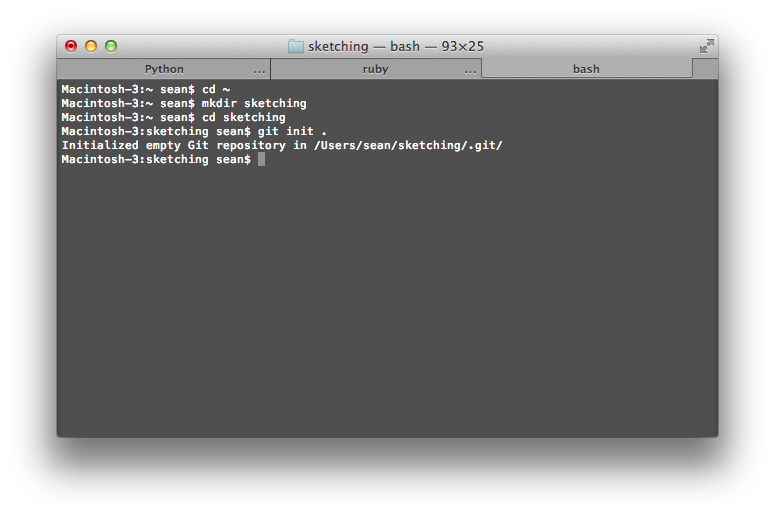
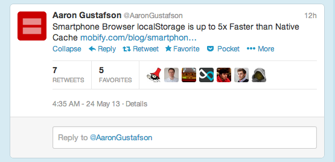
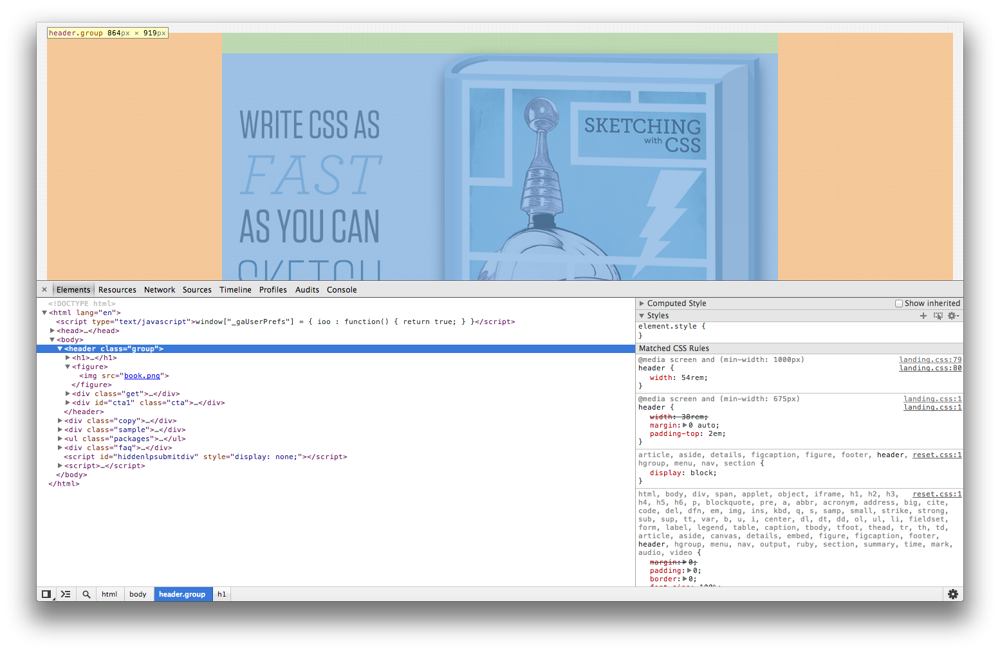
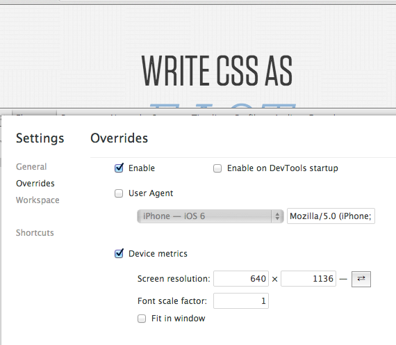
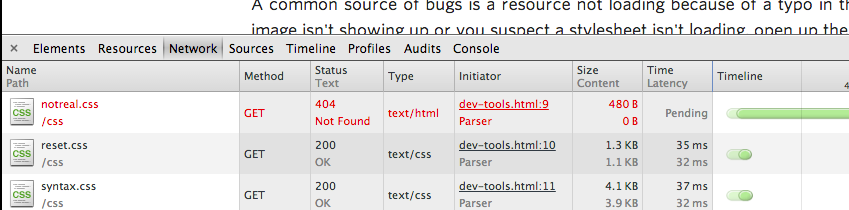

Impossible Astronaut — Suggestions for getting the most out of this book.
Choose Your Wand — How to choose a text editor for writing code.
Giant Undo Button — A gentle introduction to the basics of using Git in your projects.
Just Enough HTML — How to mark up a document quickly and efficiently.
Mastering CSS Selectors — The art of writing intricate CSS selectors.
Gettin' Sassy — The very basics of using SASS.
CSS Layout with Flexbox — Spend less time on layout with flexbox.
Build Your Own Grid — Build a simple grid system from scratch.
Photoshop in the Browser — Features in CSS3 that can save you a trip to Photoshop.
Developer Tools — Use Chrome's developer tools to save time and many, many headaches.
A Responsive Aside — The tools you need to create a responsive design.
Advanced Tools — Advanced weapons to add to your arsenal after you've mastered the basics.
Thanks
Author Bio
Acknowledgements
Impossible Astronaut
It's June 3, 1965, and Earth is wrapped in an invisible blanket of EM waves stuffed with Beatlemania and commercials for Swanson TV dinners. Edward H. White II looks down at our little blue planet from his perch in orbit and steps into space.
Humanity's first attempts at EVA (extra-vehicular activity) were wildly unsuccessful. Astronauts struggled to complete seemingly trivial tasks without overheating or maxing out their heart rates. Gene Cernan, the second American to attempt EVA, lost four pounds of water weight in seven minutes while trying to fasten a seat belt.
Walking in space seemed impossible. NASA was on the verge of giving up when finally, a year after Ed White's first EVA, Edwin "Buzz" Aldrin became the first astronaut to do anything other than flail around uselessly on a spacewalk. What was his trick? Buzz was an expert scuba diver, and he invented a method of training for EVA under water. The new training technique helped Buzz learn to work within the limits of a weightless environment and a bulky spacesuit.
You are Buzz Aldrin, the browser is your spacesuit and this book is your neutral buoyancy swimming pool.
Getting your feet wet
Modern web designers are faced with an enormous challenge. The web is no longer limited to the high resolution desktop monitors of air-conditioned cubicles, the dusty CRTs of noisy home office HPs, and the strangely wide LCDs of Dell laptop bricks. The environment of the early web was relatively homogenous and loaded with pixels for you to fill. Now the proliferation of mobile devices with useful browsers means more and more of your client's customers are seeing your design on tiny screens while jammed into a commuter train at 6:30 am. Your clients know this, and they are asking for mobile designs. Your more sophisticated clients are asking for responsive designs.
How do you create designs that work on every device? All the famous web designers you know on all your favorite blogs and magazines are shouting the same mantra over and over again: The solution to your web design problem is to design in the browser. But incorporating code into your workflow is completely new and really intimidating. How can you be creative while writing code? Will you be doomed to creating flat, boxy designs forever? Where do you even start?
The key to designing in the browser is to focus on creating a design artifact and not the final product, because you are a designer and not a developer. There are huge advantages to this approach. You can use tools unavailable to front-end developers, because they are too experimental. You'll cherry pick the most important bits from advanced topics like source control and CSS preprocessors, because even the basics will dramatically improve your workflow. You won't waste time learning the quirks of every browser.
We will skip topics important to front-end developers but not useful to you, like code readability and maintainability, performance, polyfills, Modernizr, code minification, deployment, and caching policies. Many front-end developers will balk at these omissions, because knowledge of these topics informs many of the decisions they make when engineering a solution. On the Web, implementation details are a constraint on design, whether you like it or not.
There are two options for handling this problem. The first option is for designers to become chimeras of code and design, a daunting goal few have achieved. The other option is to improve communication between designer and developer so specialized developer knowledge can work its way back into the design. This book covers the second option.
So you will learn how to get the exact layout you want, but it will only work in Chrome. You'll learn how to make site-wide changes with one line of code, but your variable naming convention won't be perfect. You'll select elements with surgical precision, but your selectors will run slowly in IE8. In short, you get to skip all the engineering overhead and dive straight into your design, right in the browser, using the latest, cutting-edge technology.
Your designs won't live in Photoshop, so no more panicking when a client asks to see the design in a different shade of blue. No more painstakingly changing fonts in every layer. On top of all this, your friendly neighborhood front-end developer will love working with you, because you can speak the same language.
The Art of Rapid Prototyping
The blank screen of a text editor is a wall between you and your creativity. The goal of this book is to get you over the wall.
The wall will always exist, until some clever Google engineer develops a mind-computer interface that can slurp ideas from your brain and convert them into HTML and CSS. Until then, the closest you can get to this sort of interface is with dead trees and graphite.
Sketching works because ideas don't start as pixel-perfect designs in your mind, so a low-fidelity sketch is perfect for representing a fuzzy idea. And the pencil stays out of your way. You are probably pretty good with a pencil, since most of us spent our childhoods learning how to wield one to fill in bubbles and write five paragraph essays. You just have to think, and lines form on the paper.
As you add more detail to the sketch, your original idea is altered by what you see on the paper. If you go through this cycle enough times and without interruption, the paper and the pencil and the sketch become an extension of your working memory and ideas flow freely back and forth. The art of rapid prototyping in the browser boils down to getting into this flow. Get the first thought out of your mind and into pixels as fast as possible, examine the results, and iterate. If you can do this fast enough, you will get into the flow.
Speed comes with time, muscle memory, and an important concept called the REPL.
Muscle memory
The best text editor is Emacs, but don't use it. There's an entire section of this book devoted to text editors, but I don't mention Emacs because it has the steepest learning curve of any text editor in the world, ever. When you open Emacs for the first time, it's a completely blank screen. To a beginner, the interface is absolutely inscrutable. But to me, it's perfection. Every mote of functionality is packaged into neat keyboard commands that I long ago stored in pure muscle memory. Emacs is one of my autonomic body functions, fully integrated into my nervous system.
Maybe you feel the same way about Photoshop. When I look at a new document in Photoshop, all I see is a block of buttons with some indecipherable alien symbols on them. I'm sure those buttons look a lot more useful to your eyes than mine. But there was a time for you when Photoshop was a black box, and you had to push through a serious learning curve to get it to do what you wanted. Maybe it even took you years. Wasn't it worth it?
As you read this book, you are going to encounter moments where the learning curve is steep and, for a time, you will not be as productive using some of these new tools as you were with your old ones. I can help you find exactly the tools you need and teach you how to use them, but I can't add anything to your muscle memory. That will take time. Reading this book won't transform you into a front-end developer with years of experience, but once you've incorporated these new tools into your muscle memory, you'll never look back. It's worth the effort.
The REPL
Python, my favorite programming language, has something called an REPL: a read-eval-print-loop. I can't imagine doing anything without it. The Python REPL lets me type in little bits of code and see the results immediately. In the bad old days, computer programmers put programs onto little paper cards, handed them to a computer operator, and then waited days to get their results back. That's one slow REPL. The longer a trip through the REPL takes, the fewer experiments you are willing to try for fear of failing and wasting time waiting for results. A long trip through the REPL limits creativity.
The foundation of this book is the notion of having a very tight read-eval-print-loop in the browser. The ultimate goal of everything you learn from here forward is to decrease the time spent between thought and result. The faster you can go from a thought to seeing colored pixels in the browser, the more creative you can be.
How to Read this Book
Have a project
I did several video interviews with expert web designers to augment the technical material in this book with real-life experiences and stories. I asked most of these experts if they had any tips or tricks for beginners, and almost every expert offered the same advice: Choose a project to practice on.
The absolute best way to learn something new is to put it to use. So before you start reading this book, pick a project you are comfortable hacking on. Maybe you need to redesign your portfolio or blog, or maybe your company has a low priority internal project you could work on. Whatever you choose, any project is better than no project, but pick something you don't mind screwing up. You'll learn more quickly if you are free to experiment and make mistakes.
You should also have a project to work on so you can start with a blank slate. When you are just learning a programming language, it's best to start with an empty text editor. Any experienced developer will tell you the hardest part of the job is reading and maintaining someone else's code. This rule extends to your own code, which will appear alien to you over time and as you learn more. Don't start with existing code, even if it's your own, and try to tweak it to do what you want. It's exponentially harder to do this than writing code from scratch.
DON'T PANIC
Some of the topics will seem intimidating at first glance. Don't panic. Every topic in the book is distilled down to only what you need to know, with step by step instructions to help you along the way.
The material in this book is non-trivial, and you should expect to struggle with some of these concepts before you completely grok them. It's okay to skip a section and come back to it later.
And remember, this isn't that high school math class you always hated. It's way easier, and you get to make awesome things.
Choose Your Wand
A good text editor is like a mind-reading piece of paper. Code should effortlessly spring into existence as you hop from file to file, line to line, like Shannon Miller executing a floor routine. Proficiency with a great text editor is the first step towards getting into the flow and creating a tight loop between brain, keyboard, and browser. Speed comes with practice, so pick one and get started.
All code starts its life in a text editor. You may start your design process with sketches or mood boards or style tiles, but at some point you have to open up a text editor and begin writing HTML. If you already have a favorite text editor, skip right along to the next chapter. If you don't, this chapter will help you pick one. Don't spend too much time here, because even though you can't do much without a text editor, you can do almost everything with any text editor.
Choosing a text editor is like choosing a magic wand in Diagon Alley. You can't just grab any old wand off the shelf, you have to test it out first. The wand for you will shoot sparks out the end and make you feel all tingly inside. I know what you are thinking; magic sparks are notoriously unreliable. But I'm serious when I say you should choose your text editor based on how you feel about it, and not by comparing features.
If you try to pick a text editor by reading blogger reviews and forum comments, you will be wasting your time. There are so many different and exotic features to consider, but here's the big secret: You're going to be using a very small set of features over and over again, and almost all text editors have these features. Necessary basic functionality includes syntax highlighting, robust keyboard shortcuts for moving through a document, a plugin architecture, and a thriving developer community. Code completion is a nice-to-have. Fancy icons are just gravy. So the real criteria for picking an editor is far less precise than a feature list, because most already have the features you need. Instead, pick the text editor that makes you happy, because you are going to be staring at the thing a lot.
To help you choose, I have curated a few recommendations for you to consider. If none of these spark, just Google around until you find something you like. Once you pick an editor, the most important thing you can do is stick with it. Every text editor has time saving features tucked away in the nooks and crannies of its submenus and documentation, and if you are a normal person, you are unlikely to read through the docs from beginning to end before diving in. That's fine. The basic features you need should take only a little time to master, and you will be productive quickly. You'll keep bumping into new features and learning new tricks, until eventually you load most of the editor directly into your muscle memory.
If you just want to pick something and move along to the next step, I recommend Sublime. Sublime is the Mercedes Benz of text editors. It's sleek, sophisticated, and packed with state-of-the-art features. When you're cruising down the HTML highway, Sublime soaks up the bumps and road noise and delivers you fresh and unruffled to your final destination.
Where Sublime is luxurious, Espresso is specialized. It doesn't protect you from the road; it connects you to the road. Espresso is designed specifically for web development.
TextMate is pared down and focused on one thing: editing text. If you tend to prefer barebones, slightly geeky software, you should consider using TextMate.
The slogan for BBEdit reads, "It doesn't suck." BBEdit is old school. Since it's been around for so long, its feature set is very robust. BBEdit is not the most beautiful piece of software, but it really does get the job done. Eric Meyer uses it, and he wrote the book on CSS.
Still can't find the one for you?
I used to have a beat-up car with a really bad clutch. One day, I had a chance to drive my friend's fancy new sports car. He asked if I could drive a stick shift, and I said, "Of course." I hopped into the driver's seat, started the engine, put it into first, and stalled the car. Turns out I was better at driving my finicky old Nissan Stanza than my friend's brand new car. The lesson here is not to worry about picking the wrong text editor. Familiarity with a tool is more important than finding the perfect fit.
Giant Undo Button
It's the first warm day of the year. All the snow has melted and you are out for a walk. With every step your good mood grows and the winter funk recedes. Everything is great and then you grind a freshly-thawed pile of dog poop into the sidewalk with your shoe. No problem. You remain calm and say with authority, "Command Z!" Nothing happens. There is no undo command for real life.
Git is something developers call "source control", but you can think of it as a giant undo button for your entire project. You should start every project in a Git repository. Why? Because Git will free your mind.
Have you ever saved a PSD with a name like client_name_final_FINAL_v2.psd? You save files with names like this to freeze a design at a good stopping point so you can try new ideas without ruining the work you've already done. As you start writing more CSS and HTML you will find your projects now consist of many files, not just one, and a simple naming convention won't work.
Imagine, you have just spent the last twenty minutes tweaking colors and nudging a logo into place and now you have an idea: what if the logo was on the left of the screen and really HUGE. You hesitate before writing the new code, because if you don't like the new logo it will be difficult to get it back to where you started from. But, if your files are in a Git repository you don't need to worry about losing all of your work. You can experiment with the new logo position and if you don't like it you can just rewind your work to a good point.
Git will let you try wild new design directions without worrying about losing your previous work.
Git Basics
The easiest way to use Git is to learn its command line interface. Okay, don't panic. I know I just casually mentioned the command line like it's No Big Deal, but seriously, this is going to be a piece of cake. You'll be working with only a few commands, you'll get in, get out and get on with your day.
In the case of Git, graphical interfaces do a bad job of hiding complexity — it's either too hidden or not hidden enough. So you won't know where to start and eventually you'll stumble into using advanced features without really knowing what they do. Soon enough you'll be so deep down the rabbit hole you'll think you've lost all of your files, (you probably haven't, it almost never happens when you are using Git). The only way to avoid the trap is to skip the GUI in the first place and stick to the basics. This does imply you will need to learn a little bit about the command line, but just enough to use Git. You don't need to master the command line.
Git has hundreds of commands, but you don't need to know nearly this many to be proficient. This chapter covers only the commands you need to get your job done. After the initial setup, you will find yourself only using two or three commands on a daily basis because some commands are only useful when you start a new project or when something goes wrong. Over time you will memorize most of these commands, but until then, this chapter is structured so you can come back and copy-paste commands when you need them.
As you work your way through this chapter, and parts of the Sass chapter, remember: the command line is a critical tool in the workflow you are learning in this book. The whole point is to whittle down the tools front-end developers use to be exactly what you need as a designer, and no more. You need a toolchain and workflow that gets out of your way and lets you create results, in the browser, as fast as possible. When you get right down to it, the command line is simply more efficient than any GUI most of the time. But you can't get something for nothing, and all of the speed of the command line comes with the cost of an uncomfortable learning curve.
Installation
If you are using a Mac you can grab the latest version of Git here.
If you are on Windows go here. Both links should start downloading the latest version of Git immediately. Choose the default options for each installer.
To test out your installation you need to open up the command line. Windows machines and Macs both have a command line built in, you just need to know how to find it.
On your Mac, open the Utilities folder and then run the Terminal application.
Get to the Utilities folder using the Go menu in the Finder.Open the Terminal application
In Windows you just need to type the letters "cmd" into the Run box in the Start Menu. So for Windows 7 and older you click Start and then in the text box at the bottom type "cmd" and hit enter. Windows 8 still has the run box, you just have to search for it.
With the command line open type git --help and hit enter. It should look something like this:
Git's help command. If you see this, everything is installed correctly.
Now that everything is installed it doesn't matter if you are on a Mac or on Windows, the commands are pretty universal. And keep the command line open, you'll be using it again shortly.
Change the command line colors
The screenshots in this chapter are all done on a Mac. If you are on a Mac, and want your command line to look exactly like the screenshots in the chapter, you need to change the color scheme. Windows users are out of luck. The command line there is not as flexible, but the textual output from the Git commands will be the same.
First you need to tell Git to output colors. Type this in an open command line window:
git config --global color.ui true
Now you need to configure your terminal window to use the same style as the examples. On your Mac, go to your terminal window, open up the Terminal menu and go to Preferences.
Go to Preferences in the Terminal menu
In the Preferences window, click on Settings and in the left box, click on the Pro option. With the Pro option highlighted, click on the Default button at the bottom of all of the options. Now if you open a new Terminal window it should use the new Pro color scheme.
Choose the Pro option
You might also consider making your terminal window open larger by default. In the same Preferences, with Pro highlighted, choose the "Window" option. In the "Window Size" section you can adjust the default width, (columns), and the height, (row), of the terminal window, 150-200 columns and 40 rows works well.
Set the columns and rows to whatever values you prefer.
Create a repository
Your code will live in a Git repository. A repository is just a regular folder that contains your project's code plus some special files Git uses to keep things organized. You'll never look at the special files, (they are hidden by default), but Git needs them. In fact, Git doesn't know what to do unless they exist. Try running a Git command right now, before you have created a repository. Type git status into the command line.
If you try to run Git commands in a folder that isn't a repository Git complains.
It didn't work because it's just a regular folder on your computer, not a Git repository. Turning a folder into a Git repository is easy, but first you need a folder. In your command line window type these commands. Pay attention to spaces. Spaces matter!
cd ~
mkdir sketching
cd sketching
git init .
(In Windows type cd / instead of cd ~).
What just happened? When you type cd ~ you moved the prompt into the home folder — cd stands for "change directory" and ~ is shorthand for the full path to your home directory. mkdir stands for "make directory", (directory is just another word for folder), and so mkdir sketching just created a folder called sketching. You then cd'd into the new folder and told Git to make it a repository using the init command.
You will need to do this exactly once for every project. Any time you create a new project, repeat these steps and just use a different name instead of 'sketching'. Here is what it looks like in the command line:

Congratulations, you've just created your first Git repository! It's in the folder called "sketching" in your home directory. For future reference, anytime you open up a new terminal window and want to get back into your repository, you need to cd into the folder you created, like so:
cd ~/sketching
Add files to your repository
Right now you have an empty folder so you need to add some files:
touch index.html
touch index.css
The touch command creates an empty file with the specified name. You could also create these files by opening up your text editor and saving new files to the "sketching" folder you created. The touch command is just a convenient way to create a new file when you are already in the command line.
One of the Git commands you will use often is status which tells you about the state of the files in your git repository. What does Git think about the new files you just created? Type git status into the command line to find out.
The names of the two files you added are in the "Untracked Files" section, (and may also be red if you've configured your terminal to use the same color settings used in the screenshots).
It turns out Git does not keep track of files automatically, you have to explicitly add them to the repository. This concept is a little confusing the first time you run into it. You've just created two files in the repository folder, but they aren't in the repository yet — there can be files in the folder that aren't in the repository and Git will ignore any changes you make to them. The “repository” consists of the files in the folder you decide should be tracked, therefore you must explicitly tell Git what files to add to the repository. To add files to the repository use add. To add everything in the current folder, (a common thing to do), just put a period after the add command, like so:
git add .
The result of adding files.
The status command now shows the files as green under a section called "Changes to be committed". Green files are tracked red files are not. What does it mean to be tracked? When you want to save changes in Git you have to do two things: you have to tell Git what you want to save and then you actually make the save. You use add to specify the stuff you want to save and commit to save the changes. Why split saving into two steps? Let's say you were in the middle of making some changes and you liked what you did in one file but not the other, by splitting the save function into two steps Git lets you preserve the changes from only the good file.
Keep things simple: add everything in the folder before you commit, (git add .), every time.
Even though the files are green they aren't saved yet because we haven't done the second step which is to commit the changes. With the next set of commands you will commit your changes and call the commit, "My first commit".
git commit -m "My first commit."
git log
git status
Completing the save.
Terminal stuck after entering git log?
After you type git log, if the output is bigger than your terminal window, the terminal may dump you intoa special mode for scrolling through long output. You can navigate the output with the up or down arrows or the space bar to skip through pages.
When you are done reading the output, just hit `q` to exit the special mode and get back to the regular command line.
The commit command has extra options you can use, and that's what the "-m" bit is, it's just an option. In this case it specifies a message that describes what you are saving. The message is in quotes next to the "-m" flag, (that's what these kind of options are called). Every save in Git has a message that is saved in the log. This is incredibly useful. The log serves as a description for each change you've made. If you ever need to go back in time to a change you made you just skim the log and use the descriptions to find what you are looking for. So be kind to your future self and put a little thought into these messages.
If you want to see the log just use the command git log. This will display a list of all the changes you have made and their descriptions.
After committing the changes status shows there is nothing to commit. There are no outstanding changes in the repository.
Changing files
You have now created a new repository and added files to it. Time to make some changes. Let's add a doctype to the html file and set the base font color in the CSS file.
Add this to index.html:
<!DOCTYPE html>
Add this to index.css:
body{color:#222222;}
Once you've done that, save those changes in your text editor and go back to the command line.
git status
git diff
Git can show you what changes you've made.
The status command tells you two files have been changed. The diff command shows you the changes you have made in greater detail. In this case you just made two small changes, so diff is not that useful. But most of the time you will be making quite a few changes before you decide to commit so diff lets you review the changes before you commit them.
Before you move on to the next section, be sure to save the changes you just made to the files.
git add .
git commit -m "Added a doctype and chose a color."
Did your terminal window get stuck at git diff?
If the output of a command is bigger than the terminal screen, the terminal window goes into a special mode.
Look closely at the bottom, see the colon with the cursor next to it?
If your output looks cut-off and you see a colon followed by a cursor at the bottom of the window, then you are in a special "buffered" mode. From here you can use the arrow keys to scroll up and down, or you can hit the space key to go to the end. To get out of the mode and back to the command line, type the letter 'q'.
Information overload? All together now...
If you are feeling a little overwhelmed don't hit the panic button just yet. What you have read to this point is mostly for reference and is much more complicated than what you will be doing day-to-day. Here is what your typical interaction with Git will look like after you have made a few changes to some files:
A typical Git session.
90% of the time all you will do is type in these two commands and, presto-chango, you get most of the benefit of using Git. If you want to get fancy, before you add changes do a git diff to review what you have done and then before you commit do a git status to make sure you have added all of the files you want to commit.
Here are the commands in plain text so you can copy-paste them into the command line:
git status
Use this command before you do anything to make sure you know exactly what state your repository is in, e.g. are there other files you changed that you forgot about?
git diff
Optionally, after running git status you can run git diff to get a more detailed look at the changes you are about to commit.
git add .
Add all of the changes you've made plus any new files so they are ready to be committed. If you run git status after git add . then you should see every file as green.
git commit -m "put a custom message between these quotes"
This saves your changes permanently in the git repository. Now you never have to worry about losing your work. You are free to experiment.
Swinging from the branches
In Photoshop you can add layers, make changes to those layers and then remove them without affecting the other layers. Git has a similar mechanism called a branch. A branch in Git is like a Photoshop layer except it's for your HTML and CSS. Want to try a completely new color scheme? Create a branch, start coding and if you don't like it, flip back to where you started and delete the branch. A branch lets you try something new and then revert back to where you started whenever you want, or keep your changes.
Creating a branch is pretty easy. Hop back into your command line and type this:
git checkout -b colors
This is actually two commands in one. The base command, git checkout, switches the view over to the new branch. The -b colors option actually creates the new branch, called colors, for you to switch to. In Photoshop, when you create a new layer you need to switch to that layer in order for your new changes to happen in that layer. Branches are the same. You can switch back and forth between branches in Git using the git checkout command without the -b option, e.g. to get back to the master branch from where you are now you type git checkout master.
There is a big difference between layers and branches. Layers in Photoshop are visible by default, in Git, you don't see the changes in a branch unless the branch is active. So if you switch back and forth between branches, you won't see changes from one branch in another branch.
The next step is to make some changes on the new "colors" branch and then merge them back into the master branch. First take a look at all the branches in your repository.
git branch
A list of the branches in your repository.
The command git branch lists all of the branches in your repository. The active, visible branch is green and has an asterisk next to it. If you make changes in this branch they will only be in this branch, they will not show up anywhere else.
There is another branch in this list called "master". Every Git repository has a master branch by default. The master branch represents the canonical, stable branch of code. The other branches are experiments. When you are done with an experiment you merge those changes back into the master branch.
Go ahead and edit one of the files in your repository. If you are in OSX and don't know where your home directory is, (which is where your repository is located if you followed the steps at the beginning of this chapter), go to the command line and type pwd. This will list the full path to the repository. Copy/paste that path into the Go to Folder window (hit Command-Shift-G or find it in the Go menu). Open one of those files and make some changes. (If you are in Windows and followed the instructions in this chapter, your repository is in the C: drive at the top level).
Go to Folder
Save your changes and then commit them. Your commit will be on the new branch. Take a look at the log and you can see your new commit.
Made some changes and committed them to the new branch.
Assuming you think your new changes are awesome, you want to merge them back into the master branch. You do this in two steps:
git checkout master
git merge colors
The first step is to use git checkout master to switch back to the master branch. The second step merges the color branch changes into the master branch. Here's what this looks like:
Merging a branch into the master branch.
Check out the logs before the merge and after the merge. After the merge the commits you made in the colors branch are now in the log of the master branch. Now that everything is in the master branch and nothing went wrong you can delete the colors branch.
git branch -d colors
Keep it simple
You can make a branch on top of another branch. If you are in a new branch and run the checkout -b anotherBranch command, anotherBranch will branch off from the curent branch instead of the master branch. Don't do this.
A branch should represent a new concept or direction; it should incapsulate a big idea so you shouldn't be creating thousands of them. Git branches are amazing and incredibly powerful but if you don't exercise some restraint you will end up in the weeds quickly. One problem is merge conflicts, which you will learn how to handle, but they are not fun and are to be avoided.
You could also make a new branch, do some work there, switch back to the master branch and do some more work, and then decide to merge the new branch into the master branch. Don't do this either. Instead work on one branch at a time and then either keep those changes or discard them completely and start at the master branch.
Git supports extremely complicated workflows. You can do almost anything you can imagine. But unless you plan on spending countless hours mastering the hundreds of commands in Git not covered in this chapter, you should stick with the basics.
MERGE CONFLICT
When working with branches you can have something called a merge conflict. Merge conflicts can be troublesome, but the good news is if you follow the workflow recommended in this chapter, merge conflicts will be rare. Also, for the most part fixing a merge conflict is not terribly difficult but if they happen often, it can become a waste of time, so avoid them by keeping your workflow simple.
How does a merge conflict happen? Imagine you are working on one branch and you change the default font color to be purple. On a whim you create another branch and make the default font color white, just to mess with your client. So you merge the white branch and then later go to merge the purple branch — the problem is you have changed the same line in the same file in two different branches and Git has no idea what to do. The merge conflict in this case is Git asking you, "Do you want purple or white?" This is what it looks like when you have a merge conflict:
A Git session that ends in a merge conflict.
The scenario is a bit contrived, and it probably won't happen when you are working by yourself, but if it does this is how to fix it. Immediately after a merge conflict Git drops some special markings into your files to show you where the problems were. If you do git diff at this point you will see exactly where those markings are:
Git leaves special marks in files where there were merge conflicts.
If you were a little confused up to this point these markings might help you understand what's going on. You can see Git knows you made changes to the color of the font in two different branches, but it doesn't know which one you want to keep. It can't assume one or the other, so it leaves it up to you. All you have to do is go into the file, edit it to reflect the change you want, save it, and commit the change.
Should the color be white or purple?If the client wants purple...When you are done making changes, add them and commit them just like normal.
When everything else fails
If you are keeping it simple and using branches to try out new ideas, most of the time Git will just work. But you will inevitably run into problems, and when you do, git reset can sometimes bail you out. Before you dive into git reset, a word of warning: some of these commands are hard to undo — redo in Git is not as easy as undo! Always do a git status to make sure you know exactly what state your repository is in before executing any of these commands. And if you are working with a team and sharing a central repository, (you'll know if you are), don't use any of these commands. Some of them are fine to use, but better safe than sorry.
If you really want to be sure you don't lose data, create a copy of your repository. If you use Github, (you'll learn about Github later at the end of this chapter), then you will always have an extra copy of all of your work and you don't need to worry too much about losing data. But if you're not using Github, a quick workaround is to just copy/paste your entire repository to another folder before you do anything risky. You can also use a command called git clone.
git clone ~/sketching ~/sketching-clone
... or if you are on windows ...
git clone c:/sketching c:/sketching-clone
If you run this command it will create a complete copy of your repository in the ~/sketching-clone folder. If something goes wrong, just rename it to sketching and you are back in business.
With a backup in place, you are ready to use the git reset command. As you create commits, Git keeps track of each change in the log. Each commit is a specific point in time you can jump back to, and git reset is basically time travel for your code. Want to reset everything to the commit you made a few hours ago? No problem, git reset can do that for you.
Here are a few scenarios you may run into and how to use git reset to get out of trouble.
You tried something out you didn't like and you haven't yet committed the changes. In other words, if you run git status you will see all of the files you changed in the "Changes not staged for commit" section. How do you get rid of these changes and get all of your files back to exactly where you started?
git reset --hard head
Warning: the --hard option deletes your changes. You can't get them back.
You made a mistake in your last commit. Maybe you added some files you didn't want to commit, or you found a typo. Most of the time it makes more sense to just keep the commit and put any fixes in a new commit, but on occasion you may want to undo the commit and just try again.
git reset head~
If you run git status you will see everything you just committed is now unstaged and if you run git log you will see your last commit has been deleted.
You made a change and commited it. The problem is, you liked what you did but you changed your mind: now you hate it and there is no chance you want to keep it. You can completely delete a commit and, in essence, take your repository back to the last good commit you liked.
git reset --hard head~
The --hard option ensures the changes are completely deleted, (unlike in the previous scenario, you don't want your changes to stick around). The head~ part of the command tells git to go back to the previous commit, head~~ goes back two commits, etc.
You've just done a hard reset of your repository, but you made a mistake and you need to get the code back to where it was. In other words, you need to undo your last use of git reset.If you've made other commits since undoing, you're out of luck. Hopefully you made a backup or have a clone sitting around.
git reset head@{1}
Git'n Advanced
Git is a state-of-the-art, distributed version control system lovingly, handcrafted in pure C by Linus Torvalds, computer wizard, hero of open source and inventor of Linux. Torvalds wrote Git to manage the 3,500 lines of code merged into Linux Kernel every, single, day. Needless to say, in this chapter you have barely scratched the surface of what you can do with this tool. What you have learned is enough to get started, but if you want to learn more about Git here are some articles and books worth reading and advanced topics to look into.
Github
Git is designed for collaboration. Each repository can be cloned and it is very easy to take any commits you have made and send them to another clone of your repository. It's so easy to do this, in fact, that it is rare to see a standalone Git repository without a clone living on a server somewhere and most of the time when you start a project with Git you start by cloning a repository from a server.
Github is the defacto web service for creating and storing clones of Git repositories on a remote server. It comes loaded with all kinds of tools for collaboration and it's free for any open source project. Github is so popular it's even common for people to say Github instead of Git — to many, they are inseparable.
Over the years Github has created excellent documentation for Git and most of it lives at help.github.com. Here are a few selections you might find helpful or interesting:
“If you use the original World Wide Web program, you never see a URL or have to deal with HTML. You're presented with the raw information. You then input more information. So you are linking information to information — like using a word processor. That was a surprise to me--that people were prepared to painstakingly write HTML.”
— Tim Berners-Lee
Even though Tim Berners-Lee did not expect people to write or even see HTML, developers and designers now have to stare at angly brackets all day because HTML has become the foundation of the web. If CSS is your potter's wheel, then HTML is the clay.
How do you work with something that has so little connection to the visual design of the page? The key is to spend as little time placating the computer as possible. Just because the web forces you to write code for computers to read, that doesn't mean you should completely cave to your new robot overlords. If putting meaning into the markup is getting in the way of your design, move on and use a <div> or something.
On the other hand, a clean document that's marked up appropriately is easier to shape and mold with CSS. It's easier to keep a model of a well-structured HTML document in your mind. In this chapter, you will learn how to markup your document enough to make working on your design easier, without getting bogged down in details.
Boilerplate
Most of your projects will start with code you reuse over and over again. This is called boilerplate. Keep your boilerplate in a separate Git repository so you can modify the files or add new stuff you find useful over time. Boilerplate is a huge time saver.
You can download boilerplate made by someone else. In fact, there are links at the bottom of this section so you can do just that. But most boilerplate downloads are designed for production-ready code and are overkill for creating a design prototype. The more markup you have to deal with, the slower your process is going to be, so the boilerplate in this section is minimal and tailored to fit into your design workflow.
Choosing a doctype
Browsers are multilingual. The browser has to know how to interpret several versions of HTML. The doctype tag at the beginning of every HTML document tells the browser what kind of HTML it's looking at so the browser can interpret it correctly.
Believe it or not many, developers are quite religious about which doctype they use. There is a camp strongly in favor of using XHTML, which is a stricter form of HTML. It's best to opt for fewer rules to follow when starting a project, so you will use the HTML5 doctype.
<!DOCTYPE html><htmllang="en"></html>
Setting a language
In addition to the doctype tag, you can see the HTML tag in this code snippet. Set the language of the document as English by setting the lang property to “en”. You can find an entire list of languages here. This is one of those cases where semantic markup helps. If you want fully justified text in your design, you'll probably want hyphens. You can set those in CSS, but you have to specify the language.
Choosing the encoding and setting the viewport
Next in the boilerplate are the meta tags. Meta tags are tags that tell the browser about the document. They live in the head of the document, and there are two you should include in every project.
The first meta tag sets the character encoding of the document to UTF-8. The second meta tag makes a design responsive. If you load an HTML document on a mobile phone and it doesn't have this tag, the phone will pretend to have a screen big enough to render the website as if it was a desktop monitor. Sites that don't specifically support mobile browsers are still useable, but you have to pinch and tap to make the zoomed-out text big enough to read. But if you have designed a view of your site that works on small screens, you don't want the phone to pretend it has a big screen. This tag turns off that behavior.
What is this UTF-8 thing?
The characters you see on this screen are actually stored as a series of ones and zeros (binary) somewhere in the computer's memory. The computer looks at a series of ones and zeros and knows, for example, that it's the letter "a." It then renders that "a" on the screen using whatever typeface you selected.
There are multiple ways to represent the letter "a" using binary. These representations are called encodings. How are encodings created? You and I could decide that 001001 is the letter "a." We just invented a character encoding, which is simply a mapping of ones and zeros to
symbols like "a" or "@." When a computer looks at a file that uses our encoding and sees 001001, it knows it's looking at the letter "a."
Early encodings like ASCII didn't actually encode very many characters. The web has outgrown the basic set of symbols defined by ASCII, so most of the time you will use UTF-8, which has encodings for over a million different characters.
Here are some examples:
♠ ™ ♫ ♪ ☺
Adding a reset stylesheet
You should also start your projects with a reset stylesheet. Add this into the head of your boilerplate document.
There is no standard for default styles, so every browser has slightly different settings. If you don't use a reset stylesheet, the work you do in one browser may look slightly different in another browser until you discover which default style you need to change.
You shouldn't worry about cross-browser compatibility, but you should sill use a reset stylesheet because it sets reasonable default styles for every element. Without this, you will find yourself overriding default styles over and over and over again. You want to spend less time overriding default styles and more time adding the styles you want. This is the job of a reset stylesheet.
These are the browser's default styles before the reset stylesheet is included.After you include a reset stylesheet, it's closer to a blank slate. You don't have to override any defaults; just add the styles you want.
There are many reset stylesheets, but the de facto standard is Eric Meyer's reset.css. Save the file you find there into the same directory as your base document.
Putting it all together
Here is what you should have in your base document at this point.
<!DOCTYPE html><htmllang="en"><head><metacharset="utf-8"/><metaname="viewport"content="width=device-width"/><title>Don't forget a title</title><linkrel="stylesheet"type="text/css"href="reset.css"/></head><body></body></html>
The boilerplate you just created is simple and lightweight. But if you want to get complicated, check out HTML5 Boilerplate. Here is a link to the HTML5 Boilerplate base document, a much fancier version of what you just created. Most of what you see in there is completely overkill for you, but not overkill at all for the final version of a complicated web page or web application.
How to mark up a document
Now you have your boilerplate loaded up in your favorite text editor. You have some content from your client, maybe an old website, sample article, or at least something to practice with. What's the next step? How do you mark up the content so you can start working on the design?
When you open a text editor, your first thought should not be, "Is this a section tag, or is it really a div?" You should be firmly in design mode. If you start worrying about writing perfect markup, any chance you had of getting into a creative flow will be instantly obliterated.
You need just enough markup to hold the page together and give your CSS something to grab, and the document should be clean and readable. There is a middle ground between perfectly semantic markup and a big ball of mud. Even simple projects will become unwieldy in short order if you thoughtlessly dump markup onto a page.
Starting with an example
The best way to learn how to mark up a document is to use a real example. I've pulled the content from the landing page for Jarrod Drysdale's book Bootstrapping Design and put it into a rough outline. The challenge is to take raw content like this and mark it up enough to start designing it.
-- Main header
Become the designer your startup needs.
-- Main tagline
Youre building a business, but great design feels out of reach.
What if you could design it yourself?
-- List of things you get with the book.
155p PDF, ePub, mobi (DRM Free)
2 Printable
Cheatsheets
Resources for
Further Learning
Download a Sample
-- main copy
Save thousands by not hiring a designer.
Designers are expensive. Templates never quite fit. Save money and get
the tailored design your startup needs. Learn to do-it-yourself while
your business grows.
Learning is simple.
Learning design doesnt have to be insurmountable. Great design isnt
just lofty theory. Hone your instincts. Train your eye. Employ basic
techniques and see an immediate improvement in your work.
Design for success.
Design can produce measurable gains for your business. Learn to place
emphasis and guide users to take action. Earn the trust your business
deserves with a polished, professional design.
You are a designer.
You are capable of beautiful design. Learn to start with a blank
screen and end with a compelling solution for your business. Craft an
experience worthy of your elegant code.
-- Call to action
Why spend $1000s hiring a designer?
-- Testimonials
I highly recommend it for developers and product builders...I created a
good enough design myself, without much time or money, and was
able to launch my product. Eric Davis, @edavis10
Design is often described as something mysterious, that can only be
accomplished by the talented few. That's bullshit. Design is a skill that
can be learned. It's also a process that can be reverse-engineered, to a
degree. Jarrod's book will give you a huge head-start in both.
Jarkko Laine, @jarkko
-- What's in the book
155p PDF, ePub, mobi (DRM Free)
2 Printable
Cheatsheets
Resources for
Further Learning
$39
Revised Edition
Includes new content and revisions requested by readers.
Buy Now or Download a Sample
-- FAQ section
Why should you become the designer?
Because designers are expensive and templates are created without
any understanding of the problem they propose to solve. With basic
knowledge, you can create a design that is more than good enough
to launch a new business.
Who is this book for?
The book is written primarily for programmers, but founders of all
backgrounds and skill sets will learn just as well. Those not familiar
with coding might not recognize a couple of terms, but the core
principles are accessible to everyone.
Does the book cover this or that specific design topic?
This book contains the minimum design fundamentals that
bootstrappers must understand in order to launch a business.
My intent is to emphasize design basics. Youll notice some topics,
even popular ones, are absent. This is not because such topics
are unimportant but because they are neither suitable for beginners
nor relevant to their bottom line.
Note about .ePub & .Mobi formats:
For better viewing of the graphics and illustrations, consider using
the PDF version of this eBook. The .ePub and .Mobi formats provide
limited control over graphics and typography, and thus are less ideal
for a design book. I've made every effort to ensure they are readable
and useful for quick reference.
-- about section
Im a web designer and bootstrapper. I believe in bootstrappers and
the businesses they are building, and I know design can help them
succeed. Ive completed work for such diverse clients as funded tech
startups, financial companies, movie studios, and consumer brands
working at agencies and as a freelancer. I write code. I prefer getting
things done to just talking about it. I want to help your startup succeed
with practical but effective design.
The biggest header
When you mark up a document, think about the biggest header first. There should be one and only one H1 tag on the page, and the most important bit of copy goes in it. In our example, it's pretty obvious what goes in the H1 tag.
<h1>Become the designer your startup needs.</h1>
Structural elements
The goal of the first pass is to create a mental model of the document. The more sense the markup makes to you, the easier it will be for you to slice and dice the document using CSS later. So use whatever tags that make sense, and don't fret about getting it exactly right.
As you work your way down the document, use structural tags to lump the content into broad sections. HTML5 has several tags for marking off big sections of a document: <header>, <footer>, <aside>, <nav>, <article>, <section>, <main>, and of course the venerable <div>. Each of these structural elements has a specific and extremely technical definition for how it is to be used, and it's easy to get bogged down in the details. Here's a tip: For prototyping, a very high-level knowledge of these tags is all you need. This guide from Mozilla is the perfect quick reference.
Here is what you might have for the first part of this document:
<section><h2>Youre building a business, but great design feels out of reach.
What if you could design it yourself?</h2><ul><li>155p PDF, ePub, mobi (DRM Free)</li><li>2 Printable</li><li>Cheatsheets</li><li>Resources for
Further Learning</li></ul><ahref="/">Download a Sample</a></section>
A section tag wraps a big, important part of a document with content that is all grouped together, so it makes sense to wrap what appears to be an overall summary of the book in one section. The <h2> is debatable, because it could easily be a paragraph. In general, default to the more specific tag. So in this case, a header tag is a little more specific than just dumping the text into a paragraph. If it seems like the content deserves a more specific tag, you are more likely to want to style it differently later, and more specific markup will make that easier. There is a list of items at the end of this section. Lists should be marked up as lists.
Use only what you need
<sectionclass="main"><h2>Save thousands by not hiring a designer.</h2><p>Designers are expensive. Templates never quite fit. Save money and get
the tailored design your startup needs. Learn to do-it-yourself while
your business grows.</p><h2>Learning is simple.</h2><p>Learning design doesnt have to be insurmountable. Great design isnt
just lofty theory. Hone your instincts. Train your eye. Employ basic
techniques and see an immediate improvement in your work.</p><h2>Design for success.</h2><p>Design can produce measurable gains for your business. Learn to place
emphasis and guide users to take action. Earn the trust your business
deserves with a polished, professional design.</p><h2>You are a designer. </h2><p>You are capable of beautiful design. Learn to start with a blank
screen and end with a compelling solution for your business. Craft an
experience worthy of your elegant code.</p></section>
It almost makes sense to put each of these items in a list. You wouldn't be wrong if you did. But it is best to have a light touch on your first pass because you can always come back and add later, and it's easier to manage less markup.
Use divs for smaller sections
On most landing pages, a few items like prices, testimonials, and lists of features are clustered around the call to action button. So each of these items is lumped into the call to action section. The testimonials are lumped into a div because they are likely to be visually grouped together. A div is a better choice here than a section, because sections are for bigger portions of your page. According to the specification, they should almost be standalone documents. Again, a list is marked up as a list, and for specificity, one line is marked up using an <h3> tag — it could easily have been a p tag, also.
<sectionclass="calltoaction"><h2>Why spend $1000s hiring a designer?</h2><divclass="testimonials"><p>
I highly recommend it for developers and product builders...I created a
good enough design myself, without much time or money, and was
able to launch my product. Eric Davis, @edavis10
</p><p>
Design is often described as something mysterious, that can only be
accomplished by the talented few. That's bullshit. Design is a skill that
can be learned. It's also a process that can be reverse-engineered, to a
degree. Jarrod's book will give you a huge head-start in both. Jarkko Laine, @jarkko
</p></div><h2>What's in the book</h2><ul><li>155p PDF, ePub, mobi (DRM Free)</li><li>2 Printable Cheatsheets</li><li>Resources for Further Learning</li></ul><spanclass="price">$39</span><h2>Revised Edition</h2><h3>Includes new content and revisions requested by readers.</h3><ahref="/">Buy Now or Download a Sample</a></section>
This section of a landing page tends to be divided up visually, so there will probably need to be more divs to break it up. But again, it's easier to do this stuff later. If you leave off the div for the testimonials in the first pass, it's not a big deal.
Use classes, not IDs
Classes don't tromp on each other like IDs. If you accidentally give two elements the same ID, you set yourself up for some strange bugs. This won't be a problem for smaller projects, but as projects get larger, you'll find using classes squashes this entire category of bugs.
Also, use classes to describe the document and not the styles. Later, you may find it useful to create classes that bundle up styles. For example, a “highlight” class could change the font color to red for use on paragraphs, list items, spans, headers, and so on. But if you are creating classes like this now, you are getting ahead of yourself.
Why not just divs with classes?
Constraints speed up any process. The HTML5 structural elements are perfect for a quick first pass over a document because they are generic, and it's usually obvious how to split a document into sections, articles, and headers. These tags also give you a consistent language, so your stylesheets will be easy for members of your team to interpret. The divs with classes approach can lead to code that's hard to read and harder to remember.
The entire example marked up
<h1>Become the designer your startup needs.</h1><section><h2>Youre building a business, but great design feels out of reach.
What if you could design it yourself?</h2><ul><li>155p PDF, ePub, mobi (DRM Free)</li><li>2 Printable
Cheatsheets</li><li>Resources for
Further Learning</li></ul><ahref="/">Download a Sample</a></section><sectionclass="main"><h2>Save thousands by not hiring a designer. </h2><p>
Designers are expensive. Templates never quite fit. Save money and get
the tailored design your startup needs. Learn to do-it-yourself while
your business grows.
</p><h2>Learning is simple. </h2><p>
Learning design doesnt have to be insurmountable. Great design isnt
just lofty theory. Hone your instincts. Train your eye. Employ basic
techniques and see an immediate improvement in your work.
</p><h2>Design for success.</h2><p>
Design can produce measurable gains for your business. Learn to place
emphasis and guide users to take action. Earn the trust your business
deserves with a polished, professional design.
</p><h2>You are a designer. </h2><p>
You are capable of beautiful design. Learn to start with a blank
screen and end with a compelling solution for your business. Craft an
experience worthy of your elegant code.
</p></section><sectionclass="calltoaction"><h2>Why spend $1000s hiring a designer?</h2><divclass="testimonials"><p>
I highly recommend it for developers and product builders...I created a
good enough design myself, without much time or money, and was
able to launch my product. Eric Davis, @edavis10
</p><p>
Design is often described as something mysterious, that can only be
accomplished by the talented few. That's bullshit. Design is a skill that
can be learned. It's also a process that can be reverse-engineered, to a
degree. Jarrod's book will give you a huge head-start in both.
Jarkko Laine, @jarkko
</p></div><ul><li>155p PDF, ePub, mobi (DRM Free)</li><li>2 Printable Cheatsheets</li><li>Resources for Further Learning</li></ul><spanclass="price">$39</span><h2>Revised Edition</h2><h3>Includes new content and revisions requested by readers. </h3><ahref="/">Buy Now or Download a Sample</a></section><sectionclass="faq"><h2>Why should you become the designer?</h2><p>
Because designers are expensive and templates are created without
any understanding of the problem they propose to solve. With basic
knowledge, you can create a design that is more than good enough
to launch a new business.
</p><h2>Who is this book for?</h2><p>
The book is written primarily for programmers, but founders of all
backgrounds and skill sets will learn just as well. Those not familiar
with coding might not recognize a couple of terms, but the core
principles are accessible to everyone.
</p><h2>Does the book cover this or that specific design topic?</h2><p>
This book contains the minimum design fundamentals that
bootstrappers must understand in order to launch a business.
My intent is to emphasize design basics. Youll notice some topics,
even popular ones, are absent. This is not because such topics
are unimportant but because they are neither suitable for beginners
nor relevant to their bottom line.
</p><h2>Note about .ePub & .Mobi formats:</h2><p>
For better viewing of the graphics and illustrations, consider using
the PDF version of this eBook. The .ePub and .Mobi formats provide
limited control over graphics and typography, and thus are less ideal
for a design book. I've made every effort to ensure they are readable
and useful for quick reference.
</p></section><sectionclass="about"><p>
Im a web designer and bootstrapper. I believe in bootstrappers and
the businesses they are building, and I know design can help them
succeed. Ive completed work for such diverse clients as funded tech
startups, financial companies, movie studios, and consumer brands
working at agencies and as a freelancer. I write code. I prefer getting
things done to just talking about it. I want to help your startup succeed
with practical but effective design.
</p></section>
Mastering CSS Selectors
Have you ever seen something like ul ~ li:nth-of-type(2n + 1) and wondered, "What is this strange language?" Don't panic. It's just a CSS selector, and this chapter is your Rosetta stone. By the end of the chapter, you'll be slicing and dicing HTML elements so fast, you'll put any velociraptor's middle claw to shame. As Samuel L. Jackson would say, "Hold on to your butts!"
You have a list with ten items and want to alternate the background color of each item between grey and white. How do you do it? One solution is to manually add a class to each list item that you want to give a grey background.
<ul><li>The first list item</li><liclass="grey">The second list item</li><li> ... </li><liclass="grey"> ... </li><li> ... </li><liclass="grey"> ... </li><li> ... </li><liclass="grey"> ... </li><li> ... </li><liclass="grey"> The tenth list item </li></ul>
Then, you write a simple selector.
.grey{background-color:grey;}
This approach is easy to understand and fast to implement when you're working with a small list. But it breaks down when applied at a larger scale i.e., a real project. The longer you work on a document, the bigger and more complicated it becomes, and the harder it is to make changes. When you add presentational classes, as these are called, you clutter your document. Big, messy documents are harder to style. Keep your documents as small as possible for as long as possible. Avoid adding classes to your HTML just to write a selector.
In the past, you often had no choice but to add presentational classes because CSS selectors were very limited. You couldn't write a selector to grab the elements you needed to style without adding a class or two. In the latest versions of CSS, selectors have gained a few superpowers. Some of the new syntax looks alien, but with a little practice, selectors will flow effortlessly from your mind to the keyboard.
Combinators
The simplest CSS selector is one “word” e.g., the name of an element or a class. But of course, CSS is not limited to such simple selectors. You can combine elements, classes, ids, etc. to express complicated hierarchies. The symbol between words in a selector is called a combinator because it defines a combination, and there are four different combinators:
The descendent combinator (an empty space)
The child combinator (>)
The adjacent sibling combinator (+)
The general sibling combinator (~)
Child Selectors
The combinator you most likely already know is the empty space used in standard descendant selectors.
ulli{margin-top:1em;}
This descendant selector selects every <li> under the <ul>. But what if there is a nested list, and you don't want to style its list items? You can use the child combinator, a greater-than-sign (>), instead of the descendant combinator to select only the parent list's items. A child selector selects the children of the element that match the rule, not all the descendants. Children are one level down in the HTML tree, and descendants are one level or more down in the HTML tree. It's easier to understand with an example.
The first rule selects any list that is a child of the div and the list item children of the list. The second rule selects the list items of the inner list. The result looks something like this:
Result of using child selectors to pinpoint the inner list versus the outer list.
If your markup is nicely indented, you can think of child elements as being one level of indentation in. Put your finger on the first <ul> tag in the example code and then go one level of indentation in. Run your finger down the markup and stop at the closing tag for the list. (Gently now, this is an ebook. You don't want to ruin your nice monitor). Every <li> that falls under your finger before you reach the closing tag is a child of the list. Any list items with deeper indentation like the ones in the "Inner List" are not children; they are descendants.
Favor child selectors over descendent selectors. Most of the time when you write a descendant selector, you should be writing a child selector instead. The more specific your selectors are, the less likely you are to have styles spill over unexpectedly into other parts of your design.
Adjacency Selectors
Descendant and child selectors handle elements below other elements. What about an element that's next to another element? For example, each sub-section of this book starts with an <h3> tag followed by text wrapped in <p> tags. The <p> tags are “next” to the <h3> tags at the same level in the HTML document hierarchy, and you can select them using an adjacency selector.
What if you want to make the text of the first paragraph of each section italic? Each section starts with an <h3>, and the first paragraph of each section is next to it. In plain English, you want to select the first paragraph following any <h3> tag. You can do this using an adjacent selector, like so:
<h3>Example Header</h3><p>This is the first paragraph, and I should be italicized.</p><p>This is the second paragraph, and I should be normal.</p>
h3+p{font-style:italic;}
Looking at the markup, you can see that the paragraph is directly next to the <h3> tag in the hierarchy. Use a + to say you want the paragraph next to the header.
The first paragraph adjacent to the header is italicized.
What if you want the second paragraph instead? There are a few ways you could go about it, but you could also use an adjacency selector for this.
h3+p+p{font-style:italic;}
Translated to English, you would read this selector as, "The paragraph next to the paragraph next to the header."
All the siblings, please
The adjacent sibling selector only gives you the first sibling that matches the rule, but what if you want all the siblings? These kinds of selectors are called “general sibling selectors”, and the combinator is a ~.
<p>A paragraph before the header</p><h3>Example Header</h3><p>This is the first paragraph, and I should be italicized.</p><div><p>This won't be italic, because it is one level deeper in the hierarchy.</p></div><p>This is the second paragraph, and I should also be italicized.</p>
h3~p{font-style:italic;}
This selector translated into English would be, "All of the paragraphs next to and after the header."
Only the two paragraphs next to and after the <h3> tag are italicized.
The paragraph before the header is not italicized, and neither is the paragraph nestled inside the div container. Only the paragraphs after and next to the header in the hierarchy are selected and styled.
Structural Pseudo-Classes
How do you give every other row in a table a grey background and make the first row bold? How do you add a border to every other element and not to the last element? In both cases, the best solution is to use a structural pseudo-class. There are twelve structural pseudo-classes, but this section covers just a handful of the hardest ones to understand. With these under your belt, you can pick up the rest of the pseudo-classes quite easily. Also, even with just these few pseudo-classes, you will significantly cut back on the number of times you find yourself adding presentational classes to your markup.
Pseudo-classes are filters
A pseudo-class is a filter for elements you have selected. Imagine you have a document with several lists, and you've written some CSS to set the font-family, color, and a few other things.
Now, say you want to make the text bold in the first item of every list. Your CSS, if you use the :first-of-type pseudo-class, might look like this:
ulli:first-of-type{font-weight:700;}
The ul li part of the selector grabs all the list items contained within every list in the document. Picture a huge pile of every <li> in your document, and then shove them through a filter. The filter checks whether the element is the first list item of its parent and only lets those elements through. The elements that get through the filter are given a font-weight of 700.
If you treat pseudo-classes like filters (and this is a pretty accurate mental model of what is happening behind the scenes), you will avoid strange behavior down the road when you start incorporating more pseudo-classes not covered in this chapter.
The :first-of-type and :last-of-type pseudo-classes
The :first-of-type and :last-of-type pseudo-classes filter out everything except the first and last siblings of the type provided by a selector. These are pretty easy to understand and a good place to start before diving into the more complicated and powerful :nth-of-type.
Here's a quick example of the :last-of-type pseudo-class in action. What list items will be outlined in blue if you took this markup...
<ulclass="outer"><li>
First list item
</li><li>
Second list item
<ulclass="inner"><li>First</li><li>Second</li><li>Third</li><li> Fourth</li></ul></li><li>
Third list item
</li><li>
Fourth list item
</li></ul>
.. and applied this CSS ...
ul.outerli:last-of-type{outline:1pxsolidblue;}
... to this list?
An outer list and an inner list.
It turns out, the last item of both the outer list and the inner list will be outlined. It looks like this:
The last item in both lists is outlined.
If you thought only the last item of the outer list would be outlined, don't worry. It's a common error. The trick to avoiding this mistake is to think very carefully about the first part of the selector — the part before the pseudo-class. These are the elements you are about to shove through the pseudo-class filter. If you look at the selector ul.outer li, it's a descendant selector. It's going to grab every <li> underneath ul.outer, which includes all the <li>'s of the inner list. The two list items outlined are both the "last of their type," so they both get through the :last-of-type filter.
Here is an example with a more targeted selector. This CSS uses :first-of-type to only highlight the first <li> of the outer list.
ul.outer>li:first-of-type{outline:1pxsolidblue;}
Notice the child combinator, which will only grab the <li>'s of the outer list and won't dive another level into the inner list.
Selecting the first list item of only the outer list.
Pay attention to the elements you select to pass through a pseudo-class filter. In these examples, it's really easy to see a blue or red outline. But if you are adding margin or changing a z-index, it's a lot tougher to spot unintended consequences in your document. A little work up front can save you a big headache later, especially when you start working with :nth-of-type.
The :nth-of-type pseudo-class
The mother of all structural pseudo-classes is :nth-of-type. It is so powerful, you can often use :nth-of-type in place of loops and conditional statements written in a server-side language. But with all this power comes complexity. Here is the definition directly from the spec:
The :nth-child(an+b) pseudo-class notation represents an element that has an+b-1 siblings before it in the document tree, for any positive integer or zero value of n, and has a parent element. For values of a and b greater than zero, this effectively divides the element's children into groups of a elements (the last group taking the remainder), and selecting the bth element of each group.
— W3C HTML5 Specification
Needless to say, :nth-of-type is tricky to wrap your head around the first time you see it. To make it easier, this section will cover a few easy to understand examples and provide you with several patterns you can plug into your next project.
The basics: selecting even and odd elements
You can use :nth-of-type to add styles to alternating items in a list or rows in a table. For example, let's say you want to alternate the background color of rows in a table to improve readability. Here is the markup used in the next few examples:
<table><thead><tr><td>
Symbol
</td><td>
Combinator Name
</td><td>
What It Does
</td></tr></thead><tbody><tr><td><spanclass="keyword"> (an empty space) </span></td><td>
Descendant combinator
</td><td>
At times, authors may want selectors to describe an element that is the descendant of another element in the document ...
</td></tr><tr><td><spanclass="keyword">></span></td><td>
Child combinator
</td><td>
A child combinator describes a childhood relationship between two elements. A child combinator is made of the ...
</td></tr><tr><td><spanclass="keyword">+</span></td><td>
Adjacent sibling combinator
</td><td>
The adjacent sibling combinator is made of the plus sign (U+002B, +) character that separates two sequences ...
</td></tr><tr><td><spanclass="keyword">~</span></td><td>
General sibling combinator
</td><td>
The general sibling combinator is made of the tilde (U+007E, ~) character that separates two sequences of simple ...
</td></tr></tbody></table>
With a little CSS to fancy up the table, it looks like this:
The table HTML with a bit of CSS to make it look nice.
Usually, tables have borders around the cells or rows to make it easier to track across, but there is nothing yet in this example. The effect you want is a slightly darker background color on every other row. You could go through each row and add a class name to the ones you want to give a border, but that's extra work you can avoid if you use the :nth-of-type pseudo-class.
The :nth-of-type pseudo-class takes a parameter, which is just some extra information that tells the CSS what to select. In other words, :nth-of-type is dynamic depending on what parameter you choose.
For this scenario of adding a background color to every other row, baked-in options are available: even and odd. If you add the following CSS to the table stylesheet, this is what happens to the table:
The table with every even row given a greyish background.
If you had used odd instead of even, the colors would be swapped.
The browser assigns siblings a number
In addition to even and odd, you can also pass in a number or formula to define a range of numbers. The use of even in the last example may have already clued you in. How can a row be "even" unless it has some sort of number? As it turns out, the browser assigns sibling elements a number starting with one, which explains why the even rows started at the second row.
The numbers the browser assigns to each row.
You can put these numbers into :nth-of-type and style specific elements. For example, if you want to specify a unique color for each row of the table, you could use :nth-of-type and specify the number of each row.
By default, the table stretches to take up the entire width of the screen, and each column adjusts itself to take up the widest width of its content. The CSS above specifies a width for each <td> in the head of the table. The rest of the elements in the column adjust to the width of the header cell.
Formulas define sets of numbers
What if you want to select every third item in the table? There is no built-in parameter to pass to :nth-of-type for this, so you have to pass in a custom formula.
table>tbody>tr:nth-of-type(3n+3){/* styles in here */}
The formula generates a set of numbers that starts with n equal to 0 and goes up by one. The formula above gives you this set, which goes to infinity:
3, 6, 9, 12, 15 ... 3n + 3
Remember, each sibling element has a number assigned to it, and you passed in one specific number in the last section. The formula lets you create a set of numbers and automatically feeds those into the :nth-of-type selector. In essence, the formula is a shorthand for this ...
The formulas for :nth-of-type can take a few tries before you internalize how they work. But you may run into a few patterns more often than others. They are included here, along with some sample code, for you to copy-paste and use right away in your projects.
If you really want to understand how these work and it's not immediately obvious to you, try plugging in numbers for n starting with zero and going up by one. It helps to see the numbers the formula would generate.
Alternate more than two colors
A common pattern is to assign three or more colors to alternating rows instead of just alternating between two colors. You can do this using :nth-of-type.
With the CSS applied, the table now looks like this:
Alternating three colors instead of just two.
If you have more than three colors, just continue the pattern.
Do something with the first four rows
What if you want to do something with the first four comments for every post on a blog? Maybe you want them to have a slightly larger font-size or a different background color. It's pretty common to want to do something with the first X elements in a list, and you can use this :nth-of-type pseudo-class with any selector.
What if you have a very long list of comments, and you want to hide all except the first four? The markup for your comments might look something like this:
ul.comments>li:nth-of-type(n+5){display:none;}
Additional Resources
The selectors you have learned so far should help you avoid going back into your code and adding presentational classes — most of the time. The fact is, there will be times when a selector doesn't immediately come to mind, and you will need to add a class or ID to select the right element. Don't worry about it. Nothing bad will happen, and you'll learn more about selectors naturally over time.
There are many more structural pseudo-classes and selector modifiers. It's worth skimming other articles and the specs from time to time, even if you only add one or two more bits of selector syntax to your arsenal.
:nth-tester — Try different values of :nth-of-type or :nth-of-child selectors, and see what happens visually. The :nth-of-child selector was not covered in this chapter. While more popular for some reason, it's harder to understand and easier to make errors with. You can usually get the job done without it.
How :nth-child works — :nth-child is very similar to :nth-of-type, with subtle differences. Sometimes it's exactly what you want. Most of the time, you just want :nth-of-type.
You have a blank text editor screen and a fresh Git repo ready to go. But before you dive in, you need to add one more weapon to your arsenal: Sass. Sass makes writing CSS faster, and it's perfect for both rapid prototyping and creating maintainable stylesheets. In other words, much of the Sass you write for a prototype will be reused in the production version of your design, so you get twice the bang for your buck.
Stylesheets grow like weeds. If you've ever worked on a large website, you know how painful it can be to simply change a color across the site. At the root of the problem is duplication, and CSS does little to discourage it. What if CSS actively discouraged duplication? What if you could try new colors and fonts across your entire design with one line of code? You can do all of this and more in Sass with mixins and variables — powerful tools for killing duplication and writing maintainable stylesheets.
There is way more to Sass than what is covered in this chapter, but even the small subset you'll learn here could easily double your CSS throughput. Creating and modifying CSS quickly is the cornerstone of designing in the browser. If want to go fast, you can't get bogged down in technical details. Ideas should flow easily from your mind into code, and Sass can help you get there.
How Sass works, in a nutshell
Think of Sass as CSS re-imagined to include features many developers wish CSS had to begin with. When you use Sass, instead of writing files that end with .css, you write .scss files. But browsers only know about regular CSS. They can't read Sass files, so how do you get your Sass into the browser? This is about to get a little mind-bendy, but give it a second to sink in: You run a program to generate CSS files from your Sass files.
If you speak another language, it's pretty easy to understand how Sass works. Sass is just another language and capable of expressing everything CSS can, but more concisely. The problem is that your browser only speaks CSS, so you need a translator to take the Sass files and turn them into CSS files. Your HTML documents link to the generated CSS files, not to the Sass files. Your browser will never know about Sass, because it only ever sees the translated CSS files.
Getting Sass Up and Running
Installation
Installing Sass on your Mac is straightforward. Open up a terminal session (as you did in the Git chapter) and type:
sudo gem install sass
You will be prompted for your administrator password. Type in your password and hit enter. Sass is now installed.
On Windows, there is an extra step. You have to install Ruby first. Grab Ruby for Windows here. Choose the default options, but make sure to also choose the option to “Add Ruby executables to your PATH”. After Ruby is installed, open a command prompt and type:
gem install sass
Adding Sass to your project
The first thing you need to do is create two folders: one for Sass, and the other for CSS. You will be going back into the command line, but again, you are just getting in, running a couple commands, and getting out. Reuse the same folder you created in the Git chapter. If you didn't create that folder or skipped a step, do this first:
cd ~
mkdir sketching
cd sketching
git init .
If you already created that Git repository, just do this:
cd ~/sketching
Once you are in the folder, create the two folders and kick off Sass:
After entering these commands, it will look like the command prompt is hanging. That's because Sass is now running and waiting for you to edit test.scss and write some Sass! Once you do and you save the file, Sass will generate test.css and put it into the CSS folder you just created.
This is what it looks like when Sass is running.
Ignore generated files with Git
Sass is running. If you want to stop it, hit Ctrl-C in the terminal window. Keep it running for now, but you can't do anything else in that terminal window. You need to run a few commands, so open up another terminal and put cd ~/sketching into your repository.
Now run git status in your repository. You should see something like this:
The result of running git status on your repository after running Sass.
You can see the two folders you created and a third folder called .sass-cache. Sass stores a couple things in this folder to speed up its processing, because with a ton of files, it can get a little slow. The problem is that you don't want to track this in your Git history. It's just a bunch of extra, potentially large and unnecessary files clogging up your repo. You should also ignore the generated CSS, so ignore the entire CSS directory.
You can tell Git to ignore files. The way to this is to create a special file called .gitignore and place it in the root of your repository. Within this file, you specify files or directories to be ignored. Here's how you create one to ignore the files generated by Sass. In your terminal (assuming you have cd'd into your repository):
Now do a git status again, and it should look like this:
What your repository status looks like after adding a .gitignore file.
What strange magic is this?
You've just typed some esoteric incantations into the command line, but really all you've done is created a file and added two lines to it.
Let's make everything you've done so far a little more concrete. Open the repository in a window, so you can see the files Sass has created for you. To do this, type pwd just like you did in the Git chapter. This prints out where your repository is. You can then copy/paste the path into the Go-To-Folder command. (The directions are slightly different in Windows, but again, this is just like what you did in the Git chapter.)
This is what you should see when you open your project in a window.
Notice the two folders you've created. (You may also see the two files you created in the Git chapter, but those are not in this image.) In the css folder, there is a file called test.css — you did not create this file. This was generated by Sass. After running the command sass -w scss:css, you told Sass, "Watch the scss folder. Any time something changes, generate a corresponding css file in the css directory." That's how Sass works. You create and modify scss files, and Sass generates css files which you load in your site.
Missing from this view is the .gitignore file you just created and the .sass-cache file generated by the Sass command. These are hidden files and don't show up in the finder or in Windows by default. If you really want them to appear in the finder and you are on a Mac, you can try this.
If you ever need to edit the .gitignore file, the easiest option is to open the file into a text editor from the command line. While in the command line and in your repository's top directory, type:
open -e .gitignore
On Windows type:
notepad .gitignore
Add the new files to your Git repository
Everything is ready for you to start writing Sass. The last step is to add the new files to your Git repository.
git add .
git commit -m "Added a .gitignore file and my first Sass file."
The rest of this chapter assumes you have Sass up and running (as you should now). It's a good idea to try out the concepts presented in this chapter. The test.scss file you just created is a great place to experiment because it's already created, and Sass is running and waiting for you to start typing.
Variables, Arithmetic, andFunctions
Variables
Sass variables allow you to change values throughout your CSS in one place. You create a variable by giving it a name and assigning a value to the variable. Then, use the variable name throughout your code instead of the value.
Variable names look like this:
$base-color:blue;
Variable names start with a $ and look just like a CSS property. The name is followed by a colon and the value. The value must be valid CSS, and the entire statement ends with a semicolon.
Open test.scss in your text editor. Add the following Sass:
/* A bunch of Sass variables. */$body-copy-font:verdana,sans-serif;$header-copy-font:georgia,serif;$dark-grey:#222222;$base-font-size:1em;$big-font-size:$base-font-size*2;$biggest-font-size:$base-font-size*3;/* Some CSS using the Sass variables */body{color:$dark-grey;font-family:$body-copy-font;font-size:$base-font-size;}h1,h2{font-family:$header-copy-font;}h2{font-size:$big-font-size;}
Open test.css in the css folder of your project. This is the CSS generated from the Sass you just added to test.scss. It should look like this:
You can see how the variables have been swapped out for values in the generated CSS. Try changing the values of the variables and watch the changes propagate to the CSS. Also notice the font-sizes, which are multiples of the base font size. What this means is that you can change the base font size, and the sizes will grow or shrink proportionately. Doing calculations on property values is one of the advantages of using Sass.
In this case, there isn't much duplication, but this is about the simplest stylesheet imaginable. Anything more complicated, and using Sass variables starts to pay dividends.
Arithmetic
Sass supports basic arithmetic operations on values. Arithmetic works just like you would expect. You've already seen one example of multiplication in the previous section. Sass also supports +, -, *, /, and %. There are a couple "Gotchas!" with the arithmetic operators, but they are avoidable or easily corrected:
Always use parentheses around the division operator. There is a conflict between Sass and plain CSS. The / operator is valid in both regular CSS and in Sass, but it's used for something completely different in both cases. You can avoid any problems if you wrap division inside parentheses, like so:
$small-spacing:($big-spacing/2);
Sass also supports doing arithmetic on numbers with different units. It isn't always possible, though. For example, if you try to divide pixels by ems, it won't work. There is no need to memorize what units can and can't be mixed. Your best bet is to try and let Sass tell you if it worked or not.
This is the error message Sass throws when you try to mix units incorrectly.
What is the % operator?
The % operator is something you may have never seen before. It's called the modulus operator, and it returns the remainder after dividing a number. Chances are good that unless you get into more advanced mixins (beyond what is covered here), you won't use the modulus operator.
The remainder is what's left over after a number is divided evenly as many times as it can be. For example, the number 2 divides into 4 perfectly. But how many times does 2 go into 5? Just a little more than twice. So in this case, 2 goes into 5 twice for a total of 4, which leaves 1 left over. 5 % 2 == 1.
The modulus operator is mostly used for determining whether a number is a multiple of another number. For example, if you want to test if a number is even:
This snippet sets the color to blue when the counter is even and sets it to black for odd numbers.
Functions
Variables and arithmetic operators are huge time savers, but Sass can save you time another way when it saves you a trip to Photoshop. Sass has a bevy of functions for calculating CSS property values. Each of these functions makes it easier to explore color options using CSS instead of Photoshop.
The utility of these functions depends on how you think about color. Sass supports a very precise exploration of colors defined by formulas and guided by color theory, but if you're more comfortable creating color schemes with a color wheel and swatches, Sass might not work for you. But remember, the advantages are huge. If you have carefully defined your color scheme using Sass and you want to try a new base color, you just have to change the variable.
adjust-hue changes the hue of a color. You provide it with a base color and degrees to adjust it on the color wheel. There is some color theory behind this function beyond the scope of this book, so this is just a quick explanation. First start with a base color, which falls somewhere on the color wheel.
The RGB color wheel.
Imagine your base color is red. 90 degrees away from red is chartreuse green. 180 degrees from red is cyan. Here are the Sass and the results:
These colors were generated using the adjust-hue function.
lighten makes a color lighter. darken makes a color darker. Each function takes a base color and a percentage. If you specify 100% for lighten, the color is white. Specifying 100% for darken makes black, as you would expect.
The grayscale, complement and inverse of one color.
Sass Mixins
You can think of a mixin like a variable, except it contains multiple lines of CSS instead of just a value. If you find yourself repeating a few lines of CSS over and over again throughout your code, you should use a mixin to remove the duplication.
Imagine you have defined a border, border-radius, box-shadow, and background-color you want to use on a few elements in your design. You could take the CSS and copy/paste it everywhere you need it. But if you are using Sass, you can put the code into a mixin and reuse it wherever you need it with one line of code.
To create a mixin, define it like so:
@mixin mixin-name{//Put some Sass in here.}
When you want to use the mixin, write @include mixin-name where you want the code to appear. (Mixins can also accept parameters, but that's an advanced topic and won't be covered). Here is a straightforward example that has three boxes with two different styles for border and background color. Both style options have been defined as mixins, so they can be used anywhere.
You may look at this example and wonder, "Instead of using mixins, why don't I bundle the reused CSS into selectors for the divs?" If you did that, you would have something like this:
You could do this. In the final production version of the design, it even might make more sense to do it this way. (Far less CSS is generated, so your stylesheets would download more quickly.) But the advantage of mixins used like this is two-fold: First, it's easier to remember a mixin than to remember a location in a file. Instead of searching through the file, just type @include (insert mixin name here). It's also easier to read CSS when styles are bunched in one place. For example, when you are looking at the styles for the <h2> tag, you can see everything in one place just above your call to action button. Use mixins so you don't have to jump all over the document to restyle one element.
Mixins can do even more work for you
This isn't the entire mixin story. First, mixins make it easy for developers to share code across projects. Secondly, several open source libraries contain tons of useful mixins and are worth looking into. However, much of the value of mixins (outside what you've learned so far) is to make it easier to work with heavily prefixed CSS options. Essentially, mixins help developers abstract away differences between browsers.
For example, if you were using the Bourbon mixin library, you could type this:
Obviously, this is a huge time saver for web developers. As a designer creating prototypes, it's probably not as useful to you. Even still, once you're comfortable with the topics covered in this book and looking to expand your skills further, you might want to take a look at Compass and the aforementioned Bourbon.io libraries.
Sass Best Practices
Imagine trying to find your utility bill buried in piles of paper atop a desk loaded with garbage and clutter. The task would be easier if the desk was tidy, right? With Sass up and running, you need to keep everything organized. Code reuse is a powerful time saver, but if your project is a chaotic, disorganized mess, you'll never make use of your variables and mixins.
Stick your mixins in your partials
Sass has something called a partial, which is a file that is not compiled to CSS. Think of a partial as a bucket for code you reuse throughout your project. If you keep your code organized, it's easier to find what you are looking for later, and partials are a powerful tool for organizing that code.
Create and import partials
To make a partial, create a .scss file and prefix its name with an underscore. Create a couple partials in your project folder, like so:
cd ~/sketching/scss/
touch _colors.scss
touch _typography.scss
touch _buttons.scss
To use the code in a partial, import it into your .scss file. In your test.scss file, add this code at the top:
The import statement pulls any code within the partial into the current file, so whatever variables or mixins are inside the partials can be used in the current stylesheet. You can reuse the code in partials across every stylesheet in your project.
Organizing your partials
If you have one partial that uses variables defined in another, you have to import both partials. This can create some complicated interactions and dependencies. The easiest solution? Import all your partials into every stylesheet. To make this easier, you could even create a partial called _all.scss. Import all your partials to it, and then import the "all" partial into each of your stylesheets to make sure you get everything.
With this setup, you have all your variables and mixins included in one line of code. Just update the "all" partial with new partials as you create them.
At this point, you have created three partials: one for colors, one for buttons, and one for typography. You may find yourself adding more as you go, but this is a pretty good starting point for organizing your code. Styles for typography, buttons, and colors are shared across every page of most websites (assuming they have clean, organized, and well-maintained stylesheets — not a given). Put all variables and mixins related to typography into the typography partial. Do the same for buttons and colors. Layout is less frequently shared, but it might also make sense to create a partial for spacing.
Further Reading
This chapter has covered only a small subset of Sass features. The goal was to teach you the most important tools and skip the rest, but the rest of Sass is valuable, too. You'll just see diminishing returns. Plenty of resources exist for learning more Sass. Here are a few links to get you started:
Laying out a design with CSS is fraught with peril of cross-browser bugs and mysteriously collapsing margins. But new tools like flexbox have transformed this once odious task into something you shouldn't dread. By the end of this chapter you'll be coding up new layouts for your design faster than you can think of them.
Remember those old cartoons with the road runner and the coyote? Rocket propelled rollerskates, bottled lightning, bundles of dynamite, magnetic bird seed, razor boomerangs, "super" bombs and giant trampolines -- no technology could catch the bird. Every tool backfired and sent Wile E. Coyote plummeting to hillarious death.
Using CSS to layout your design is like trying to catch the road runner with a jet-powered pogo stick. It won't end well.
CSS sucks at layout
Nothing is more frustrating than writing a pile of code, refreshing your browser and seeing a jumbled mess of overlapping text and images. You can't use tables because they aren't semantic. Floats and clears never do what you expect. Just to center something on the page requires strange incantations of auto margins or text-align -- the center tag is right out.
But you know what? This is old news because CSS doesn't suck at layout anymore.
Introducing Flexbox
Once you spend some time with flexbox you'll feel like an unstoppable super hero of CSS. Your footer will stay at the bottom of the page where it belongs. Your list items will flow effortlessly into neat little columns. Divs will shrink and grow and fly in delicate formations like the Blue Angels. Image tags will dance and jump and sing songs of your design prowess.
"Wait, let's not get carried away" you say, "Flexbox is too new. You can't even use it in IE9."
It doesn't matter. Think about it: how many browsers does a PSD work in? None? Exactly. As a designer you're not building the final version of the design. You don't care if flexbox doesn't work in Opera Mini because the comp you are creating for your client only needs to run in Chrome. Worry about SeaMonkey later.
The key is to keep your layout code separate from your style code. Create an entirely new stylesheet just for layout. Duplicate selectors if you have to. By keeping it separate, it's easier for a front-end developer to create the final, production-ready layout code once the design has solidified enough.
Diving into Flexbox
You only need to know a handful of CSS properties and a little terminology to use flexbox.
Everything starts with the flex container. Once an element is set as a flex container it's children follow the flexbox rules for layout instead of the standard block, inline and inline-block rules. Within a flex container items line up on the "main axis" and the main axis can either be horizontal or vertical so you can arrange items into columns or rows. The axes are invisible, but in the examples added, visible lines will help you see how the main axis and cross axis are oriented.
The first example centers the flex container children, (the <header>, <article>, <aside> and <footer>), vertically and horizontally. Vertical centering with CSS used to be really hard, with flexbox it's one line of CSS.
flex-flow:row;align-items:center;/* This centers the items vertically. */justify-content:center;/* This centers everything horizontally. */
The flex-flow property determines which way the main axis is oriented, (the cross-axis is always perpindicular to the main axis). When it's set to row, the main axis is horizontal, and it's vertical when set to column. You use justify-content to determine where the items line up on the main axis and align-items to shift them around on the cross-axis.
The main axis is horizontal, so the the flex items are lined up in a row.
What happens if the main axis is vertical, (so flex-flow is set to column)?
The main axis is vertical, so the the flex items are lined up in a column.
In the examples you've seen so far, justify-content and align-items have been set to center but you can also move them to the beginning or end of either axis. To move the flex container children to the end of either axis, set justify-content or align-items to flex-end. To move them to the beginning use flex-start.
The content is in the bottom right corner because it's aligned with the end of the main axis and the end of the cross axis.
Space around flex items
Instead of pushing items to the beginning, center or end of the main axis, you can distribute space evenly around the items. Set justify-content to space-around or space-between.
The flex items are centered on the cross axis and have space evenly distributed around them along the main axis.
Shrinking and growing
You can define the size of flex items. This lets you create layouts with, for example, a column with a fixed width and a column that grows or shrinks with the space available.
You achieve this magic by setting three separate properties on the children of the flex container: flex-grow, flex-shrink, and flex-basis. Or you can combine all three values in one property: flex.
The left flex item stretches to fill about a third of the screen and the others shrink to fill the rest evenly. In this case I've also decided to have them grow and fill the vertical space.The skinny column is fixed at 50 pixels. The other columns grow and shrink to fill in the remaining space evenly.
Beyond static images and text
You haven't seen much code up to this point because the CSS property names don't map well to the very simple concepts behind flexbox. Flexbox makes much more sense when you can watch and see what happens on the screen as the code is updated. Here are three screencasts to help you add flexbox to your arsenal. You can also lean on this cheat sheet while you get used to the terminology.
Flexbox doesn't solve every layout problem but it certainly fixes the worst of them. As you look at a few real world examples you will learn a few other techniques for arranging elements on the page but flexbox alone will get you 90% of the way most of the time.
37signals
The product section of the 37signals homepage.
You're looking at three divs centered horizontally — certainly not the most complicated layout of all time. Even so, before flexbox creating this kind of layout required some thought; centering elements on the page was not intuitive.
The HTML
<divclass="products"><div><imgsrc="basecamp.png"></img><h2><ahref="">Basecamp</a></h2><h3>Manage Projects</h3><p>Used by millions for product management.</p></div><div><imgsrc="highrise.png"></img><h2><ahref="">Highrise</a></h2><h3><ahref="">Manage Contacts</a></h3><p>Know the people you do business with.</p></div><div><imgsrc="campfire.png"></img><h2><ahref="">Campfire</a></h2><h3>Work in Real-Time</h3><p>Group chat rooms for your business.</p></div></div>
No layout yet
Before any layout logic it's all mushed to the left and in a column.
This is how the markup renders with just enough CSS to make the styling look about the same. You are looking at the default browser layout before we've applied any flexbox rules. The three boxes are div elements. Div elements are block elements and block elements stack, they don't flow next to each other.
First let's center it on the page and get everything flowing into a row.
Five lines of flexbox code setting three properties and our Basecamp example is starting to look pretty good.
The div wrapping the product divs was set to "display: flex" to make it a flex container. Then to get its items into a row, set the flex-flow property to "row".
Getting everything centered was easy. Justify-content let's you move flex items on the main axis. In this case the main axis is horizontal because the flex-flow property is set to "row". When the main axis is horizontal, justify-content will move the items to the left and right. If the main axis is vertical, (set flex-flow to column), justify-content moves the items up and down instead of left and right. To center the product divs in the example horizontally,set justify-content to "center".
The first real world example is almost done. The middle container needs some space around it and all of the items in each container should be centered horizontally.
To center the items in the div it's easiest to think about them as flowing in a column and then centering them on the cross axis. So in this case the main axis is vertical and the cross axis is horizontal. Here's the code:
/* 1. Make all of the product divs flex containers. 2. Set their items to flow into a column. 3. Center them left-to-right by centering them on the cross axis using align-items. */.products>div{display:flex;flex-flow:column;align-items:center;}/* Using selectors like this is covered in another chapter.*/.products>div:nth-child(2){margin:02em;}
The finished example with everything lined up inside the product divs and margin around the middle.
Anatomy of a Tweet

An example tweet.
The HTML
<divclass="tweet"><divclass="content"><imgsrc="aaron.png"></img><h2>Aaron Gustafson <span>@AaronGustafson</span></h2><time>12h</time><p>
Smartphone Browser localStorage is up to 5x Faster than Native Cache
<ahref="/">mobify.com/blog/smartphon ...</a></p><ulclass="actions"><li><ahref="">Collapse</a></li><li><ahref="">Reply</a></li><li><ahref="">Retweet</a></li><li><ahref="">Favorite</a></li><li><ahref="">More</a></li></ul><ulclass="meta"><liclass="retweets"><span>7</span><span>RETWEETS</span></li><liclass="favorites"><span>5</span><span>FAVORITES</span></li><liclass="people"><ulclass="people"><li><imgsrc="people1.jpg"/></li><li><imgsrc="people2.jpg"/></li><li><imgsrc="people3.jpg"/></li><li><imgsrc="people4.jpg"/></li><li><imgsrc="people5.jpg"/></li><li><imgsrc="people6.jpg"/></li><li><imgsrc="people7.jpg"/></li></ul></li></ul><time>4:35 AM - 24 May 13</time></div><divclass="reply"><divcontenteditable="true">
Reply to <span>@AaronGustafson</span></div></div></div>
No layout
The default browser layout: stacked in a column and pushed over to the left.
Perfect is the enemy of done
When confronted with a confounding layout problem a common pitfall is to waste time finding the "best" solution. As soon as you find yourself pondering the merits of changing the markup and worrying about messing up the semantics, stop what you're doing and see if absolute positioning would work.
Whenever you're thinking about technical decisions you're not thinking about design. Remember, your job is to create a comp, not the final site. The code you are writing will be reworked and rewritten so don't spend any time making it perfect -- perfect is the enemy of done.
The first challenge with the tweet is the user profile image and the date tag. Although not obvious in this example the tweet text flows under the date and the profile image seems to have it's own column. The way the markup was written does not make a flexbox layout immediately obvious. You might be tempted to spend a few minutes to figure out a way you could change the markup and get the layout you want with flexbox, but here is an example where you could easily get mired down in technical details. Instead, just absolutely position both elements where you want them. There is danger in absolute positioning for production code, but it's fine in small doses for prototyping.
The CSS
/* create the space on the left for the profile image*/.tweet.content,.tweet.reply{padding-left:70px;}/*move the image to the left into the column*/.content>img{position:absolute;margin-left:-60px;}/* Move the timestamp up and to the right Used "em" instead of pixels here, but pixels are just fine. */.content>time:first-of-type{position:absolute;margin-top:-1.5em;margin-left:30em;}/*Added some vertical padding to all of the elements in the content div. */.content>*{padding:.25em0;}
Absolutely positioned two elements
What the tweet looks like after absolutely positioning two elements and adding some spacing.
The next step is to take the actions, (e.g. collapse, reply, retweet, etc.), the retweets and favorites and the list of small profile pictures and put them into rows instead of columns.
Elements in containers are arranged into rows by default so you just need to set the container to display: flex.
You'll notice in the real tweet the numbers are on top of "favorites" and "retweets". There are two ways to do this. The first is to treat them like flex containers and put them into a column. The second way is to make each of the spans wrapping the numbers into a block element instead of inline.
The second way is only obvious if you know that block elements stack. The beauty of flexbox is you don't need to know the ins and outs of block, inline or inline-block elements. Learn the basics but don't waste time — use flexbox when it's not obvious.
Two more lines of CSS for layout plus some spacing and borders around key elements. Yes, it's missing icons for the action links. It's just an example.
CSS-Tricks
Included in the book example code is a third, much more complicated example for you to look at. Most of the CSS-Tricks forum has been recreated using flexbox for layout.
The CSS-Tricks forum reverse engineered using flexbox.
Load the example in Chrome and use the skills you learned in the chapter on using Chrome's Developer tools to see how some of the elements in the example are laid out using flexbox.
Tips and tricks
When absolutely positioning an element use margins instead of top, left, right, bottom. Elements absolutely positioned with margins are more consistent across different screen resolutions.
Use ems instead of pixels. Ems adjust when you change font-size. If you increased the base font size in this example the date would maintain its position.
Use padding instead of margin for spacing. Spaces created with margin sometimes collapse into each other instead of stacking. Sometimes you want this but most of the time it's not helpful. Padding doesn't collapse so it's more predictable than using margins.
Use the universal selector, *, without fear. Experienced web developers avoid the universal selector for performance reasons. You shouldn't spend any time thinking about this. There are performance issues but nothing to worry about when creating the initial design.
The key to creating more complicated layouts with flexbox is to break it into pieces. Don't be afraid to make everything a flex container if that's what works for you.
Summary
Mastering the art of laying out elements on a page using CSS is the hardest part of designing in the browser.
Every example in this chapter has code, included with the book, you can look at and use in your projects. Open the examples, (included with this book), with Chrome and use the developer tools to get a closer look.
If designing in the browser is a video game, then layout is the evil boss at the end of the level. Flexbox is a powerful weapon for defeating the enemy, but if one weapon is good, two weapons are even better. Every designer needs a decent, simple grid system. Become a dual-wielding slayer of CSS layouts with your own custom grid system, and no layout will stand in your way.
CSS grid systems are overwhelming when you first size them up. Each is opinionated, and many are overwrought. There are hundreds of grid systems like Foundation, Bootstrap, Skeleton, and 960 Grid System. Which one should you choose?
You should build your own.
It will take less time to write your own grid than it will to read through the documentation of any grid system out there. You can have most of the features you want with a surprisingly small amount of CSS. Plus when you're done, you'll have a much better understanding of how these systems work. When you do eventually choose a more robust system, you can make an informed decision.
A note on browser compatibility
The biggest drawback to building your own simple grid system is browser compatibility, mainly IE8. Remember, you are learning how to create a prototype. Prototypes are not the final product, but simply a more effective way to communicate with the developers on your team. Browser compatibility has less weight in this early phase of a project, so if your code does end up in production, it's extra gravy on top. There is still a place for using your own grid system to get an idea across to your team or client if your project requires IE8 support.
Learn by Doing
A grid lets you line up the contents of your design horizontally at evenly spaced points. Most grid systems refer to these evenly spaced points as columns, because columns are easy to visualize. Some grid systems use fixed width columns. For example, columns could be fixed at 10px wide. But with the proliferation of different sized web browsing devices like phones and tablets, a fixed width grid is too limiting. Grids should be squishy. They should work with media queries, so you can easily create responsive designs. Ideally, they should also work without adding layout specific elements or classes to your HTML.
An example layout you can achieve with the code in this chapter.
Initial setup
To create this grid system, you will start with a simple piece of markup. You will add styles to create a grid and factor out the common code so you can reuse it on all your projects. You are going to build a CSS grid system from the ground up.
You need a little bit of content to grab onto with your CSS selectors so you can put it into a grid. Normally you would start with actual content for your project, but since this is just an exercise, here's some simple markup you can work with. Copy-paste this snippet into a copy of your boilerplate. (You can use the boilerplate included with the book.) Name the file grid.html.
You will also want to create a Sass file called grid.scss and start up a Sass daemon to watch the file. (See the chapter called Gettin' Sassy to refresh your memory on how to do this.)
sass -w grid.scss:grid.css
Add a link to the generated CSS in the head of the document.
The divs have no content, so they have no size. Add a height to each of the divs within the container. Throw an outline around each of them, so you can tell them apart. Put this in grid.scss.
.grid>div{outline:1pxsolidblack;height:100px;}
A two column grid
With the basic markup and CSS in place, you are looking at a stack of outlined divs. The next step is to put those divs into a grid. The most basic grid is a two column grid. One way to think of a two column layout is that each grid item takes up half the space of the grid container. If you didn't have a grid system, your code for this layout would be pretty simple. Float the divs to the left and set their widths to 50%. You probably also want to add a clearfix to the container for good measure.
When you float elements in a container, the container collapses. It's as if the items inside the container push and stretch it, like a grocery bag full of produce. When you take the elements out of the container by floating them, the container collapses to nothing because there's nothing in it, just like the grocery bag collapses when you take out all the produce. A collapsed container can result in confusing layout bugs and other problems, such as a disappearing background.
In this example, there are a couple elements inside a containing div with a grey background color. They are in the default layout for block level elements i.e., in a stack. In this configuration, the stacked elements stretch the containing div vertically — the children give the containing element its vertical height.
If you float the elements to the left, the containing element collapses. There goes your background color. (The color you see is a remnant of the padding set on the container, which gives it some height so it doesn't collapse to nothing.)
The way you fix the problem is to add a clearfix to the containing div. It turns out that if you have an element at the bottom of the container set to clear: both, the container won't collapse. It's like putting a really big microwave dinner at the bottom of the paper grocery bag. Even when you remove everything else, the bag doesn't collapse.
The element at the bottom of the container is called a clearfix, and these days you can create the element with CSS instead of adding unnecessary markup to your document.
It's fine if you don't know exactly what's going on with this code or why the browser doesn't collapse an element if it has a clearfix. Just remember that floated elements cause their containing element to collapse, and you can fix it with a clearfix.
Add a gutter
A grid needs a "gutter," which is space between the content of columns and rows. If you only add padding to the grid items you have right now, the grid items will be bigger than 50% and the floats will break. This is because of the way the CSS box model works. This little quirk is the most common source of pain when creating a float based layout.
When you set the width of an element, it does not include the padding or border. If you have padding or border on an element and set its width to 50%, the actual rendered width of the element is 50% plus the padding and border. Most of the time you want the entire width of the element, including padding and border, to be equal to 50%, because that's what you expect. But that's not what happens, your layout gets messed up, and your fist goes through the monitor.
Fortunately, you can now tell the browser to do what you expect with one LCD-saving CSS property: box-sizing.
The box-sizing property will let you override the default width of an element so it includes padding and border. At the top of your grid stylesheet, add a dash of CSS.
This CSS sets the box-sizing property to border-box for every element in the document, including pseudo-elements. With this done, you can add a gutter with padding to your columns without messing up your percentage based widths. The padding and border are now included in the width, as you would expect.
.grid>div{float:left;width:50%;/* Add a gutter */padding:4px;}
Make it reusable
You have created a dead simple, two-column grid system with some floats and the magic of box-sizing: border-box. The problem is, the code you have so far can't be reused easily, and you're stuck with two columns because you have a hard coded width of 50%. But with a little work and some Sass, you can pull out the reusable pieces and create your own grid system.
The basic grid system you have right now has four components:
A grid container with a clearfix.
Column width set by the width property on each of the grid container elements.
Gutters added by setting box-sizing: border-box and adding padding to each grid container element.
Columns put in place by floating the grid container elements to the left.
You could break these pieces out into classes in your CSS. If you did that, your grid system might look like this:
/* box-sizing all the things */*,*:before,*:after{-moz-box-sizing:border-box;-webkit-box-sizing:border-box;box-sizing:border-box;/* The clearfix */.grid::after{content:"";display:table;clear:both;}/* Columns are floated and have a gutter of 4px */.column{float:left;padding:4px;}.col-1-2{width:50%;}.col-1-3{width:33.3333%;}
To use this code, add classes to your markup in the right places. The grid container would get the grid class. Put a column class on each element in the grid container to make it a column. The col-1-2 and col-1-3 classes determine the width of the column. "1-2" is one-half and creates two columns, and "1-3" is one-third and creates three columns.
Breaking out the CSS into classes makes the code reusable, but adding classes everywhere is tedious and adds clutter to your markup. Instead, you should use Sass mixins. For example, instead of classes like col-1-3, you would create a mixin with the same name. In your stylesheet, add the mixin to the column element.
@mixincol-1-3{width:33.333333333%;}.example3>div{height:100px;/*Use the column mixin */@includecol-1-3;}
The column width mixins are pretty straightforward, but getting the gutters and clearfix into a mixin is more complicated.
@mixingrid{/* Only needed if you don't use a reset stylesheet. */margin:0;padding:0;/* The clearfix */&::after{content:"";display:table;clear:both;}/* Add the gutter and float the columns left */&>*{padding:.25rem;float:left;}}
The key to understanding this mixin is the &. The & refers to the parent selector. So if you include the grid mixin, the & will refer to the selector under which the mixin is included. Here is a simple example:
a{color:black;&:hover{color:red;}}
In this little snippet of Sass, the & would translate to an a. The CSS would look like this:
a{color:black;}a:hover{color:red;}
If you use the grid mixin on the markup from the beginning of this chapter, your Sass will look like this:
.grid{@includegrid;}
The CSS generated after using that mixin looks like this:
With one line of Sass, you now have the clearfix and gutters, and all the grid container children are floated left.
Put it in a partial
If you take the column mixins, the box-sizing snippet, and the grid mixin and put them all in a partial called _grid.scss, you now have a portable mini grid system you can use on any project, in any stylesheet, with one line of CSS. Just copy the _grid.scss into the folder where you keep all of your Sass, and @import it whenever you need it.
@import"grid";
Use Your New Grid System
The rest of this chapter assumes you have the _grid.scss partial. If you didn't write it yourself as you read the chapter, you can copy it from the example code included with the book.
The first example in this chapter was a grid with two columns. To recreate the two column grid with your new mini grid framework, start with the same markup.
At the top of your Sass stylesheet, @import the grid partial.
@import"grid";
Set the outer div to be a grid, and set the column widths on each of the containing div's children.
.grid{@includegrid;}.grid>div{@includecol-1-2;}
That's all there is to it. You now have a two column layout. To get a four column layout, change one line of Sass.
.grid>div{@includecol-1-4;}
A four column layout.
A more realistic example
Most designs are more complicated than a two or four column layout. In this example, you will create a layout with a header and a footer, an article with a list of thumbnails, and an aside for navigation.
The markup is just a header, footer, aside, and an article element with a bunch of divs to stand in for image thumbnails.
Notice how there are no unnecessary classes in the markup. The markup represents the meaning and data contained within the document, and nothing else. The outer div with the "main" class isn't necessary, but it is useful to chop up a layout into different grid contexts. In this case, the grid takes up the entire page and not just one component of the page, but you can easily build a layout out of multiple grids. You can also embed grids within grids.
The first big piece of the layout is to get the header at the top, the footer at the bottom, and the article and aside splitting the space in the middle with the article getting about two-thirds of the horizontal space.
Step one is to establish a grid context.
.main{@includegrid;}
The second step is to set column widths on each of the elements. The header and footer should be one column, or 100% of the width of the grid. You don't have a col-1-1 rule yet, so add one to _grid.scss (if you aren't using the example code). Any time you need a new column width, do a little math and add it to _grid.scss.
/* add this to _grid.scss */@mixincol-1-1{width:100%;}
Use the proper column mixin for each of the elements in the layout.
The columns of the aside and the article add up to a width of 100%. If elements in a row have column widths that add up to over 100%, the right-most element will drop down to the next row because there isn't enough space for it in the current row. Make sure your column widths add up to 100%.
Once you add a height to each of the elements so they don't collapse, your layout should come together.
The layout is mostly done. The image thumbnails are in a stack.
A grid within a grid
The final pieces to this layout are the image thumbnails within the article, which are just empty divs right now. Let's say you want the thumbnails in rows of three. To do this, make the article a grid and set the column widths on the thumbnails to col-1-3.
article{@includecol-2-3;/* make the article a grid */@includegrid;}article>div{@includecol-1-3;}
The finished layout.
Is it responsive?
Is your new grid system responsive? It's as responsive as you want it to be. Column widths are expressed as percentages, so as the screen grows or shrinks in size, the columns grow and shrink to fit. The grid is "squishy" by default. You can also add grid components as the screen width grows by using media queries.
Included with this chapter is the code for a slightly more complicated and responsive layout. A "responsive" layout is no different than a regular layout; the key is to add more complicated layouts in layers. Start with the most basic layout at the lowest screen resolution you will support, and as the resolution grows, add more grid components until it looks the way you want. Repeat these steps until you are done.
Responsive design is, for the most part, not a technical challenge. It is fundamentally a design problem. Your new grid system works well with media queries — responsiveness is up to you.
Additional Resources
Just like all Jedi must learn to build their own lightsabers, so all web designers have to build their own grid systems. Congratulations, young Padawan, you are a Jedi web designer now.
If you want to learn more about how others have built their own grid systems, there are plenty of other resources to check out.
The web moves quickly. Armies of open source developers spend countless hours of their spare time so you can have the latest and greatest at your fingertips. But how are you supposed to keep up? No matter how much time you spend reading blog posts, you can't possibly know everything. In this chapter, you will learn the most advanced CSS3 features used in prototyping today. Don't be surprised if you do uncover something you missed.
CSS is not a replacement for Photoshop, and it won't ever be. You may be surprised to find out what you can do these days, though. CSS3 is packed with powerful features that you can use to save time and avoid a trip to Photoshop. But what is the limit of this approach? How often should you rely on cutting edge features that only work in Chrome?
It depends on your workflow. Does your code get shipped directly to production? Are you okay with a front-end developer redoing everything from scratch?
It depends on your client's customers. Are they corporate drones stuck with IE7, or are they web designers running Chrome Canary?
It depends on the polyfill support for the feature.
It depends on your client's position on progressive enhancement.
The CSS features covered in this chapter are listed in order of highest to lowest probability of the code you write ending up in production.
For example, border-radius is widely supported and degrades to unrounded corners. Most of your clients will be fine with this, and your code will automatically be ready for production. Comparatively, CSS image filter effects aren't in any version of IE or Firefox, so if you use them in a prototype, you'll have to spend some time working up a cross-browser solution for production.
Even barely supported CSS features can have a place in your workflow.
Why CSS and not Photoshop?
Most of the design elements in this chapter can be easily achieved in Photoshop, so why bother with CSS? Because you can change an entire design with a few lines of CSS, or you could spend hours in Photoshop to achieve the same result. And any result you can achieve with CSS instead of Photoshop is work you won't have to redo later. Plus, if you are working on a team, handing CSS and HTML off to a developer is miles better than a PSD.
You will save time, move faster, and work better as a team if you communicate with CSS and HTML instead of Photoshop comps.
Polyfills
New CSS features don't work in every browser. Sometimes your design can work with or without a feature, so you say it "degrades" gracefully. For example, multiple background images don't work in all browsers, but you can write your CSS so it degrades to a single image.
A fallback is not always this straightforward, and sometimes you need the feature to work exactly the same in all browsers. In those cases, you can use Javascript to mimic the missing CSS feature in older browsers. These bits of code created to fill a gap are called polyfills.
Be very strategic about what polyfills you decide to use. Often, there are big tradeoffs in performance and code maintenance, and it makes sense to have a less advanced version of your site for older browsers.
border-radius
The border-radius property isn't exactly new or cutting edge. Browser support is nearly universal, so any code you use in your mockup will probably end up in production. The fallback is a squared corner, which is fine in most cases.
Each of these shapes was created with border-radius.
If you use border-radius with only one value in pixels, you create a square with slightly rounded corners, all the same size. But you don't have to use only one value; you can specify a different value for each corner to create different shapes.
border-radius: 5px 50px 5px 50px;
By default, border-radius creates a circle, but you can also use an ellipse to shape the corners.
border-radius: 20px/50px;
You can also specify the length of the radius with a percentage. If you specify 50%, you end up with a circle.
box-shadow
You can add shadows around elements to create a very simple 3D effect with box-shadow.
The syntax breaks down into five separate components.
Horizontal offset — the distance the shadow is shifted horizontally.
Vertical offset — the distance the shadow is shifted vertically.
Blur radius — how blurry the shadow is.
Spread radius — how far out the shadow spreads.
Color — the color of the shadow.
Inset shadows — a shadow inside the box set by inset.
There is also support for more than one shadow. To achieve this, create a comma-separated list of shadows. You can see an example in the code above.
The main limitation with box-shadow is that it's a box shadow. If you put a box-shadow around an image, it will wrap around the image container instead of conforming to the image. So, this isn't a drop-in replacement for Drop Shadow in Photoshop. There is an option for that covered later in the chapter called drop-shadow, but it's not well supported yet.
The box-shadow property is widely supported, and the fallback is just no shadow. Use box-shadow at will for any stage of your project.
background
The background property is what you use to set background images, colors, gradients, etc. But did you know that you can set multiple background images? Or that you can set a background image to move or not move when you scroll?
background-attachment
The background-attachment property lets you specify how an image behaves when a user scrolls. When you scroll in a browser window, the background image moves with the rest of the content by default. You can override this behavior in two different ways: You can set it to fixed or local.
If background-attachment is set to fixed, the image will not move when the user scrolls. Say, for example, you want to put a small image in the bottom right corner of a page. The code would look like this:
The image will always be in the bottom right corner of the page, even if the content is bigger than the window. If the value is set to scroll instead and the content is taller than the window, you won't see the image until you scroll to the bottom of the content.
The local option for background-attachment covers an edge case. If you have a container on the page with a different background image and set it to local, the image will only move when you scroll the container. This option is best avoided. It's still not supported in any version of Firefox. Progressive enhancement could be an option, but it's not ideal. Any polyfill is going to use Javascript and add page weight and event listeners. Avoid using background-attachment: local for now.
Multiple background images
You can use multiple background images. List the regular background values for each image with a comma separator.
The image listed first is on top, and every image listed after goes underneath it. You can also use the background shorthand. The shorthand can be easier to maintain because the other properties are listed right next to the image, and you don't have to scan a list of properties to match them up.
If a browser doesn't support multiple backgrounds (most do), then the fallback is nothing, just an empty background. You can fix this problem with a tool like Modernizr, so it's safe to use multiple background images when prototyping.
Multiple background images. The gradient is the first, and the book cover is the second.
Want a centered, full screen background image?
In the multiple background image example, the background-size for the gradient is set to cover, and background-attachment is set to fixed. This is a quick way to set a full page background image that won't move when a user scrolls.
Gradients
CSS gradients look great on retina displays and are easy to create once you know how they work. The syntax for gradients has only recently stabilized, but browser vendors picked up the new syntax rapidly, and you can use gradients pretty much everywhere now.
A few example gradients
There are linear gradients, radial gradients, and repeating versions of both. The syntax for basic radial or linear gradients is simple. Specify a direction and a list of colors, and the gradient will split the colors evenly and fade between them.
The directional piece of the syntax starts with “to” and is followed by directions that are the same as setting a background position. For example, you could say to top right or to bottom left or to right. You can also specify degrees, like 45deg or 83deg. Degrees start at the bottom and go around clockwise, so 0deg means a gradient pointed straight up, and 90deg means a gradient pointed right.
After defining a direction, provide a list of color-stops. A color-stop is a color combined with a position. The position is relative to the gradient line — imagine a line running through the center of the gradient that extends infinitely past the box on either side. The position of the color-stop defines when that color begins. 0% is the very beginning of the line, and 100% is the end. Everything before the stop position is a blend of the color plus the previous color.
Color-stops can be a little tricky to understand, but an example should help.
It's easiest to understand color-stops by thinking backwards. Start with the last color, blue. The blue does not define a stop, so it's 100% by default. That means the blue stops blending with the previous color and becomes pure blue at 100% and beyond. The white piece of the gradient defines a stop at 50%, so the blue stops blending with the white at 50%. Everything between 50% and 100% is a blend of white and blue. The red color defines a stop at 50%, so the white will stop blending with red at 50%. That means there is no part of this gradient that is pure white, and everything before 50% is pure red.
The linear-gradient from the example.
Radial gradients
Radial gradients are similar to linear gradients, except they expand in a shape from a central point. The biggest difference is that you need to define where the center of the gradient starts. By default, it starts in the middle of the container. The position can be defined using the same keywords as background-position, so use combinations of top, left, bottom, right, and so on.
background: radial-gradient(at top left, #a4c1de, #e46119);
These are just the basics, and radial-gradient has a few more options not covered here.
Repeating gradients
Both radial and linear gradients support a repeating option: repeating-linear-gradient and repeating-radial-gradient. A repeating gradient simply wraps the first color-stop in front of the last color-stop and repeats. The regular gradient takes the last color-stop and continues it into infinity.
background: repeating-linear-gradient(#e46119, #e46119 5px, white 5px, white 10px);
Additional resources
If you are still having trouble wrapping your head around gradients, check out Lea Verou's presentation.
You are no longer limited to "web safe" fonts on the web. The @font-face property will let you load arbitrary fonts into a site when the page loads. Support for @font-face is really strong; even IE8 has partial support. It also degrades nicely, since you can define multiple font-family options that fall back when the first option doesn't load.
The landing page for this book uses H&FJ fonts.
Where to get web fonts
When you use a web font, you will probably load your fonts from a third-party service. Three good options are Typekit, Google Fonts, and the cloud typography service from H&FJ. Each loads their fonts on your page a little differently, but they all have clear, easy to follow directions. Google Fonts is free, while the other two require a monthly subscription.
Even if you end up buying a font and hosting it yourself, you'll still want to sign up for one. With these services, you can load up tons of different fonts and try them out in the browser, in your design, until you find the combination you want.
With each of these services, you have to load up a "kit" with the fonts you want to use. It's a good practice to keep this kit as light as possible when you finally deploy to production. There are potential performance problems if you load too many fonts on the page at once, so use some restraint. But while you are still in the prototype phase, don't be afraid to load lots of fonts into your "kit" because it will make it easier to experiment.
2D Transforms
Transforms let you take a rendered piece of the page and stretch, shrink, rotate, or skew it like an image. 2D transforms are surprisingly well supported. (There are also 3D transforms, but they aren't.) If you use 2D transforms in moderation, they degrade well. However, if transforms are a central component of your design, you will be forced to use something like Modernizr to create an entirely different design for browsers without support. Use transforms sparingly, especially if you have to support IE8.
To create a transform, simply use one of the functions with the transform property. There are four functions: rotate, skew, scale, and translate.
Rotate
You can rotate elements along the X or Y axis, so there are two rotate functions: rotateX and rotateY.
Two paragraphs, with a transform applied to the second: transform: rotateY(180deg);Two paragraphs, with a trasnform applied to the second: transform: rotateX(180deg);
Skew
The skew transform stretches the element along either the X or Y axis. Imagine a box with a simple border and a line running vertically down the center. That's the Y axis. Now grab the top left corner in your mind and start stretching up. At the same time, grab the bottom right corner and stretch it down. This is how skewY works, and skewX is the same but applied on the X axis.
Two skewed paragraphs: transform: skewX(45deg) and transform: skewY(15deg);
Scale
You can grow or shrink an element with the scale transform. To grow an element, plug in a number like 2 or 3 to double or triple the size of the element respectively. To shrink an element, use a decimal value. For example, .5 will be half the original size.
Translate
You can use translate to move an element around on the page. There are many ways to accomplish this with CSS already, but the advantage with translate is that the movement does not cause a "reflow," or a recalculation of the position of every element on the page. This is an important performance consideration if you are animating an element so it moves around on the page. If you're not doing animations, move the element on the page with absolute or relative positioning instead, because those options have 100% browser support.
A note on prefixes
While transforms are widely supported, you will have to use the -webkit prefix if you are prototyping in Chrome.
The CSS-Tricks Almanac is a fantastic resource for web developers. Check out the section on transforms if you're confused about anything covered here.
3D transforms are not widely supported yet, but when they are, you are going to have a very powerful set of features at your fingertips.
Typography
The web is mostly text, and web design is mostly typography. For a terribly long time, the web was really bad at typography, but it's getting better. You've already seen web fonts, but there are a few other odds and ends you can use to make your life easier when it comes to typography on the web.
Typographical units
There are two size units that you can use instead of pixels or percentages: rem and em. A rem unit is relative to the base font size, and em units are relative to their container. Both are widely supported, degrade well, and you should use them in your projects.
For the most part, use rems. They are less likely to break or have unintended side effects because they are only relative to the base font-size. One rem is 16px by default, two rems are 32px, and so on. Change the default font-size, and every rem unit will adjust accordingly.
You can use rems and ems to create vertical rhythm in the spacing and size of your typography.
text-shadow
You can create drop shadows underneath text with text-shadow. The syntax is the same as box-shadow. Browser support for this feature is great, but it's not supported in IE9 or below.
text-shadow: 2px 2px 2px #222;
mask-image
You can use mask-image to create patterns underneath text. Browser support for all forms of masking is spotty. However, if used in moderation, this technique degrades to whatever color you have set for the text.
The linear-gradient acts as an alpha mask. The rgba color is transparent. The background color starts to bleed into the text, but the text color is where the gradient is opaque. Also, you don't have to use gradients. You can also use pngs or anything with an alpha channel.
Use hyphens for fully justified text
Fully justified text, or text-align: justify in CSS, never had a chance on the web. The problem is that fully justified text looks terrible if it's not hyphenated. Without hyphens, the browser is forced to add space around words to get them to line up on the left and right side of the container.
CSS3 provides hyphenation. In order for it to work, you need to specify a language on the HTML element. If you use the boilerplate provided in this book, you will already have this set to "en" for english. Set the hyphens property to auto.
Unfortunately, browser support for hyphens: auto is quite bad. Safari, Firefox and IE10 and above support it, but not Chrome. But for shorter texts, there is a decent polyfill called hyphenator.js. Only use this for small amounts of text, or you'll run into performance problems. But for small amounts of text, you can finally have fully justified text on the web.
Additional resources
If you are looking for a quick way to calculate a line-height, you can use this clever calculator.
Filter effects are the bleeding edge of CSS3, so browser support is not great. You can only use these in Webkit browsers like Chrome, Safari and Opera with a -webkit prefix. There is no support in IE or Firefox.
Filter effects might end up in the production version of a site for subtle user interface interactions, like for hover. In this case, it might not matter if the effect doesn't work in Firefox or IE; it just depends on how important the result is to the design. But filter effects can be useful when you are prototyping a design. It's probably faster to apply a filter effect to create an approximate look instead of going back to Photoshop to create an image asset. Just be aware, most code you write with filter effects will probably be rewritten in the final production version.
Different filter effects applied to one image.
A list of filter effects
blur — Takes a blur radius. The bigger the number, the blurrier the effect.
brightness — Accepts percentages or integers. Anything over 1 or 100% is brighter, and less than that is dimmer.
contrast — Adjust the contrast. The default value, which has no effect, is 100%. Over 100% is higher contrast, and below is lower.
drop-shadow — Create a shadow. This shadow actually wraps around an image and not just the box like box-shadow.
grayscale — Creates a grayscale effect.
hue-rotate — Adjust the hue based on a color wheel. (See the SASS chapter.)
invert — Invert the colors.
saturate — Adjust the saturation. Again, the default value is 100%. Set it to anything above 100% to increase saturation and below to decrease it.
sepia — The classic Instagram filter.
You can combine as many filters as you want. Separate them with a space.
The browser will never fully replace a tool like Photoshop, and it really shouldn't. Some of the newer Photoshop-like features in the browser can be cumbersome to work with, like gradients. Nobody thinks about gradients in terms of color-stops, so it will always be easier to create a gradient or a fancy background pattern with a visual, interactive tool like Photoshop.
So why bother? Why not do everything in Photoshop and then slice and dice it up into a web page? Because Photoshop is not the web, and you are designing for the web. When a design moves far beyond the essence of the web, well, you end up with Flash.
Most of the features in this chapter aren't Photoshop features transferred to the web. They are just features the web has been missing for a long time.
Don't forget to play
Each of these CSS features has a corresponding example in the code included with this book. The only way to learn how to use these tools is to use them. Open up the examples, and use the skills you learned in the Chrome Developer Tools chapter to explore. Play around with each example, and see what you can create.
Developer Tools
Chrome's developer tools can be mighty weapons for crushing bugs or iterating through different design directions. But they are designed for front-end developers, with many specifically designed for Javascript or more advanced uses. This chapter takes Chrome's developer tools and boils them down to exactly what you need to know as a designer.
If your comp only needs to work in Chrome, you will never have a cross-browser bug. If you write clear, simple markup, you'll avoid most types of rendering bugs. If you use Sass to define variables, you won't make math errors with spacing and font sizes. And if you use Git and commit your changes often, you will have a powerful tool to find mistakes and undo them.
In other words, using the techniques covered in this book so far will help you avoid huge swaths of common bugs, and that is by design. It's crucial for you to avoid bugs. When you're designing in the browser, every minute you spend debugging threatens to interrupt your flow.
There will be bugs, though. Bugs come part and parcel with programming. Don't ever feel bad about a bug, because the browser is an unforgiving environment. When you do run into a bug, you need to fix it fast and move on. Chrome's developer tools are the fastest way to identify and fix bugs.
Chrome's developer tools, or DevTools for short, are also great for experimenting and trying new things. Not sure about the border-radius syntax? Use the DevTools auto complete feature to get it right, and copy-paste back to your text editor. Wonder what a different background color would look like? Use the color-picker in DevTools to try different ideas without jumping back and forth to your text editor.
Once you wrap your head around a few key features in Chrome's developer tools, you'll wonder how anyone ever got anything done without them.
DevTools for Web Designers
The breadth of what you can do with Chrome's developer tools is overwhelming. The parts you need to know now are only a small but tasty piece of the pie.
Inspect element
Open any web page in Chrome. (You're using Canary, right?) Right-click any element on the page, maybe an image or a paragraph, and choose Inspect Element.
Pick the Inspect Element option from the right-click menu.
You should see a window pop up at the bottom of your browser with an HTML tree. An element of the tree, probably the element you right-clicked on, will be highlighted.
Chrome's developer tools after right-clicking on Inspect Element.
You are looking at Chrome's developer tools. If you look across the top of the DevTools window, you will see several different tabs. All these tabs are incredibly useful to front-end developers, but you will spend most of your time in the elements tab, which is where you go by default when using Inspect Element.
You will spend most of your time in the Elements tab.
The HTML Tree
In the Elements tab, the first thing you see is the HTML tree. From here, you can see the hierarchy of your markup and drill in to any subtree by clicking the arrows on the left. If you select or hover over an element in the tree, it is highlighted in the document. The element itself is blue, the margin is orange, and the padding is yellow.

The element is blue, the margin is orange, and the padding is yellow.
You can edit HTML directly in DevTools. Right click on any element in the tree and choose "Edit as HTML." You will get the raw HTML in a little box, plus a cursor so you can edit.
Right-click on any element in the HTML tree for different editing options.
As you can see, there are several other options in this right-click menu.
Add Attribute and Edit Attribute are there for adding or editing things like class names, data attributes, and ids. You can also double click on the attribute you want to edit.
Force Element State has four options: active, hover, focused, and visited. This is useful for editing button styles for hovering, clicking, and so on. Just set the state and edit the style directly in DevTools. (Don't worry; we'll get to that shortly.)
Edit as HTML lets you edit the HTML directly in DevTools. Changes you make here won't be saved back to your files, but it's very useful for troubleshooting or experimenting.
There are a few other menu items, but you probably won't need them. Ignore them for now.
Edit Styles
There is a section on the right side of the DevTools window. You can probably see the expanded Styles section and maybe the collapsed Computed Style section.
You can see the CSS styles applied to your element.
You will spend most of your time in the DevTools Styles section. Here, you can see the CSS rules applied to the element and what stylesheet the rules live in. You can enable or disable individual style rules, and you can edit or add new styles to the element. You can even change the rules themselves and make sweeping changes across your document.
The easiest way to edit styles in DevTools is to enable or disable individual rules. To do this, the first step is to Inspect Element the element you want to edit. Make sure the element you want to style is actually selected in HTML tree. Often, Chrome will select a parent element, and you will need to drill down to the specific child element that you want. In this example, the H1 tag is selected. You can see the padding in yellow. And in the styles tab on the right, you can see the CSS for the padding.
The H1 tag is selected. The padding is shown in yellow.
header>h1{float:left;padding:5rem2rem00;}
If you hover your mouse over any of the styles, you'll see some checkboxes. If the checkbox next to the padding is empty, the style is unapplied. It's as if you removed it from the stylesheet completely.
The padding style is disabled, but there's still padding applied to the H1 tag.The overridden padding style is now active, so the H1 still has padding.
A couple things happened when the padding style was disabled. First of all, the padding style was disabled for every element it was applied on. The style is not just removed for the element; it's as if you went into the stylesheet and removed the rule. This can be confusing, especially if you disable a style that is more broadly applied across your document.
You will also notice the H1 tag still has padding. This is because the disabled padding rule was overriding a different, broader padding rule in the stylesheet, which can now be applied.
If you want to override styles or add new styles on a specific element, DevTools provides a way for you to do this. In the Styles tab at the top, notice the section called element.style. Click anywhere in the box, and you can add or edit styles to only the selected element.
In this example, the text color property is set to red.
You can also add or edit defined styles in the same way. Find the style you want to change, click on it to edit or below it to add a style, and start typing.
If you want to add a completely new rule with a new selector, click the plus button in the top right corner.
Use the plus button to add a completely new style rule.
None of these changes are persisted back to your file, so don't do too much work here before copy-pasting your changes. However, if you have Sass mappings configured (as covered later in this chapter), your changes will be saved back to your files and you can essentially write your CSS directly in DevTools.
Computed Style
The Computed tab is next to the Styles tab. Select an element in the document you are looking at by clicking on it in the HTML Tree. Then, click on the Computed tab. You should see something like this:
The Computed style tab.
The computed style tab shows you a nice little image of the box model. You can see the margin, padding, and content box. It also tells you the width and height in pixels. Below the image are all the styles of the element and their actual values, the end result of all the applied CSS rules.
Sometimes you will set a style in a stylesheet, but whether it was applied or not will be ambiguous. Use the Computed style tab to see the actual, calculated value of a property. For example, you set the font property on all H2 tags, but you're not sure the change is being applied. Perhaps it's a subtle change to a similar font-family or a slightly different font-weight. You can use the Computed style tab to verify your change is applied and remove all ambiguity.
Tips and Tricks
The HTML Tree, Style, and Computed tabs are where you will get the most bang for your buck in DevTools. But there are a few other goodies you should know about.
Built-in color picker
If you define a color in the Styles section (like a background-color), DevTools comes with a built-in color picker you can use to try out new colors and see what they look like right in the browser.
The built-in color picker.
Hold down the shift key while clicking on the color box, and DevTools will cycle through color modes. It's often easier to play with colors using the HSL or RGB and flip it back to Hex to get the generated hexadecimal number.
Auto-complete
Have you ever started writing a CSS rule and realized you forgot the exact syntax or spelling of a property value? DevTools has a handy auto-complete feature that will show you valid options for a property. Start typing, and a dropdown box with valid completion options will appear. Either hit tab to complete the entry, or arrow down and hit enter when you find your selection. You can also keep typing to narrow the options.
The auto-complete can save you time and headaches.
Custom screen resolutions
The web no longer lives inside 960-pixel-wide screens. Your designs have to work on phones, tablets, retina displays, and soon enough, even in augmented reality glasses. If you've created a responsive design, you are familiar with the "squash the browser window" technique. But if you want to get a little more precise, DevTools will let you define your own resolutions to mimic different devices.
Click on the gear in the bottom right corner of DevTools.
Click the little gear to get to DevTools settings.
On the left, click on the Overrides option.
Click the overrides option to create fake device settings.
Click enable and check the Device Metrics option. You can fill in whatever values you want here, and your page will be rendered as if that is all the space it has. This is a great way to test your design on mobile devices and to make sure your media queries make sense.

Set the dimensions to whatever you want.
The network tab
A common source of bugs is a resource not loading because of a typo in the path. If an image isn't showing up or you suspect a stylesheet isn't loading, open the Network tab and refresh the page. (DevTools won't know what resources were loaded unless the Network tab is open while the page is loading.)
The Network tab.
By default, the Network tab dumps every request your page makes. If you've never seen all the network requests a page makes, it can be overwhelming at first. At the bottom of the Network tab, you can select the kinds of requests you want to see.
Filter the kinds of network requests you want to see.
Stylesheets is selected in this case, so only network requests for stylesheets will be shown. If one of the stylesheets is not loading, it will show up in red and the Status column will probably be a 404. A 404 indicates the server can't find the file, which probably means you need to fix a path in the HTML.

The Network tab shows only requests for stylesheets. The first is red and shows a 404 status code.
Click on the request itself, and it will show you more details. The request URL is what you're searching for. Take a look, and make sure it's correct.
Click on the request to see more details about it.
How to Debug with DevTools
Successful debugging is a combination of experience, good habits, and the right tooling. With time and experience, you will encounter bugs less often, and when you do, you'll take far less time to fix them. With a few good habits in place and DevTools by your side, you can also drastically cut down on bugs and the time spent repairing them.
Make small changes
The best way to cut the amount of time you spend fixing bugs in half or more is to do one small thing at a time. Use something like LiveReload or CodeKit, which are covered in the Advanced Tools chapter, to see your changes applied as you type them.
The hardest bugs to fix are bugs that are hard to find. Most time spent fixing a bug is time spent finding the bug. Anything you can do to make this step easier will save huge amounts of time. The easiest way to do this is to spot a bug as soon as it is created, and ideally as soon as you type the line of code where the bug is.
Imagine you have some images flowing nicely into rows. Everything works perfectly until you add a padding-top, and then all your images jump from their neat rows into an unrecognizable mess. You know the problem is with the padding-top, because that's what you just changed.
Now imagine the same scenario, except you keep coding for awhile before you check the results in the browser. When you finally look at your page, all the images are messed up. Why? The fact is, you don't know which change caused the problem. You have to either undo everything you've just done and reapply it one piece at a time, or you have to puzzle out the problem using Inspect Element and DevTools.
Avoid this situation. Make small changes, and check your results often.
Oops, you didn't notice the bug
Sometimes you won't notice a bug until you've been coding for awhile. You try to avoid this situation, but it happens from time to time. If you are using Git properly, you can still find and fix it relatively quickly.
As you write code, commit your changes frequently. Any time you reach a complete thought with your code, commit it. The more commits you make, the happier you will be when you find a bug. When you do find a bug and you don't know what caused it, you can use Git to locate the exact commit where the bug was created.
The magic tool for finding the commit is called git bisect, and it's pretty easy to understand. All you have to do is provide git bisect with a commit you know is good and a commit you know has the bug in it. For example, you know the bug didn't exist yesterday, so you find a commit from yesterday and tell git bisect to begin searching for the bug there. Here's how you do that. (The rest of this code assumes you are on the master branch. If you are on another named local branch, adjust accordingly).
Look at your git log and identify a good commit. The key here is to jump back to where you know the bug didn't exist, so scroll through the logs until you are sure you are looking at commits without the bug.
Once you find a good commit, copy the hash code of the good commit. What's the hash code? It's the long series of letters and numbers that comes after the word "commit" in the log. Git uses this number to uniquely identify the commit. Here's an example:
The hash code is the series of numbers and letters after the word "commit." In this case, the first hash code in the log is 1e3889c36164b5a3a9f20140e335346f22dd04ae.
You already know your last commit is bad, so all you have to do is feed these to two commits to git bisect. Start git bisect. In your command line, cd to your repository and type:
git bisect start
git bisect good 0c4572071bb015c51ddf700fdfad9395efbb26ec
git bisect bad HEAD
Insert your good hash code after git bisect good. After entering these commands, git bisect will start. You will see something like this:
The result of starting git bisect on a repository.
As you can see, git bisect has now jumped your code to an earlier version somewhere between the good and the bad commits. If you reload your page in the browser, it will look exactly the way it looked after the commit git bisect has checked out.
If you see your bug, tell git bisect this is a bad commit.
git bisect bad
If you don't see your bug, tell it the commit is good.
git bisect good
Then git bisect will take you to another commit to repeat the process. Keep doing this until you find the commit where the bug was introduced. When you do, it will look like this:
I always mess up some mundane detail.
Now you are on the commit where you introduced the bug, so what code did you change in this commit? To see the code you changed(and the code with the bug), you need to run a git diff.
git diff head~..head
You are now looking at the code with the bug in it. You should probably store the diff somewhere, so you can refer back to it later. This is because at the moment, your Git repo is in a kind of limbo. You are not on any branch, and you need to put yourself back on the master branch before you start making changes to fix the bug. So first, stash the diff somewhere you can look at it later:
git diff head~..head > ~/Desktop/buggy.txt
(Adjust your file path on Windows to c:\buggy.txt.)
Finish the git bisect with a reset.
git bisect reset
You found the bug, so now what?
Most of the time when you find a bug, you will know how to fix it right away. It's usually a typo or something pretty obvious. But what if the problem eludes you?
Open DevTools and look at one of the buggy elements. Examine all the styles applied to the element in the Style tab on the right. If you didn't get the syntax right on one of the properties, it will show up in yellow with a big warning sign.
If there are no warning signs and searches on StackOverflow are not revealing any obvious answers, the next step is the scientific method. This is also known as trial and error. (Actually, first make sure your stylesheets are loading as described above.) The good news is that you know how to make changes in DevTools directly, so it will now take you far less time to try out new ideas.
The bad news is that grinding through bugs comes with the territory when you write code, and it takes years of experience until you are any good at fixing them quickly. But if you stick with what you learn in this book, keep your markup clean, and make small changes, you will be head and shoulders above any beginner front-end developer.
Layout bug?
For layout bugs, a quick trick is to add outlines to every element in the problem container. For example, you have a list of images and are trying to float them into two columns. You got a clear wrong somewhere, and they aren't cooperating.
Jump into DevTools, and add an outline to all the li tags.
ul.photos>li{outline:1pxsolidred;}
Or use the universal selector to grab all the children elements.
.problem-container>*{outline:1pxsolidgold;}
Choose a hideous color, so the line is really easy to see. Outlines are more useful for debugging than borders, because borders can actually affect the layout. Borders have a width, and outlines do not.
Summary
Chrome's developer tools can save huge amounts of time when debugging or just experimenting with new styles. In this chapter, you've learned how to:
Inspect the styles of an element.
Enable or disable CSS rules.
Force an element into a state like hover or active to see those styles applied.
Edit HTML directly in the browser.
Edit and add new styles directly in the browser.
Look at the Computed Style to see the actual properties of an element.
Use DevTools' built-in color picker to try new colors quickly.
Use the Autocomplete feature to write CSS even faster.
Put Chrome into a custom resolution to test Media queries and responsive designs.
Troubleshoot missing stylesheets with the Network tab.
Develop good habits for writing easily debuggable code.
Use git bisect to find buggy code.
Additional Resources
There is way more to Chrome's DevTools than what was covered in this chapter. Most is geared for Javascript developers, but here are a few great resources if you're interested in learning more.
Also, if you've never encountered HSL colors before, you can read about them here or here.
A Responsive Aside
“Rather than tailoring disconnected designs to each of an ever-increasing number of web devices, we can treat them as facets of the same experience. We can design for an optimal viewing experience, but embed standards-based technologies into our designs to make them not only more flexible, but more adaptive to the media that renders them. In short, we need to practice responsive web design.
”
— Ethan Marcotte
You can't go two feet without tripping over a responsive design article on the web, and for good reason. Contemporary websites need to run on everything from smart phones to giant flat screen TVs. With every new device to support, your job gets tougher. Responsive design is a great framework for thinking about the problem.
Chances are that if you're reading this book, you have clients or bosses who ask for responsive designs, or if they aren't familiar with the buzzwords, they ask for sites that work on their iPhones. Responsive design is no longer a theoretical best practice used only by well-known web design agencies. It's how you build a modern website.
Photoshop makes even less sense now
In many agencies, web designers worked only with Photoshop and passed PSDs off to a frontend developer to implement. But now the clients and the industry are pushing and prodding you to write more code. If writing code feels alien, you are not alone. When you open a text editor and write markup and CSS, your right brain shuts down while your left brain puzzles over some weird syntax. A text editor is where your creativity goes to die.
The good news is that with a little practice, a few tips and tricks, and the right tools, you can regain your creativity and create working interactive comps with HTML and CSS. In other words, you are reading the right book.
Media queries
To some extent, this entire book about responsive design, and there isn't much else to cover in this chapter. But there is one CSS topic you must be familiar with in order to create a responsive design: media queries. You need media queries so that you can create styles specific to different resolutions.
Media queries let you specify properties of the device that the CSS is running on, and they conditionally load CSS if those properties exist. For example, if you want to change your styles for screens larger than 1000px, the media query would look like this:
@mediaalland(min-device-width:1000px){...}
The min-device-width keyword is one of several media features you can use to refine your query. In addition to height and width, you can also specify orientation, aspect-ratio, whether the screen supports color, and resolution.
The all keyword is used to specify the media type. The most commonly used values are all, screen, and print. Use print to create stylesheets for printing.
You can also combine media query conditionals to further refine a query. For example:
The CSS in this query would be applied for all screens that are 700px wide to 999px wide.
Responsive design is not a technology problem
Once you move past Photoshop and start designing in the browser, responsive design is no longer a tooling or a technical challenge. Media queries are not complicated. What is complicated is using your new tools to create flexible, flowing designs that look great and function in every possible environment. Once you've mastered all the topics in this book, you have all of the technology you need. The rest is a design challenge.
Once you've mastered the basics of your new development workflow, you'll want to add a few advanced tools to your arsenal.
The topics in this book and the depths to which you have explored them have been carefully chosen to maximize the utility you get from the tools in the time you spent learning them. In the Git chapter, you learned about commits and local branches, but you didn't learn about remote tracking branches, how to rebase, or countless other topics. You learned about Sass mixins, but you didn't learn all the control directives, how to nest rules, or how to use @extend.
Everything up to this point was designed to get you up to speed quickly and to increase your productivity with the smallest amount of effort and time. You've been eating the juicy bits, but what happens when you've made your way through all the low-hanging fruit?
Focus on Speed
Do you want to learn new techniques, skills, and tools that will consistently increase your productivity? Focus on speed. Jeff Bezos is famous for investing in the speed of Amazon's services over adding new features, because nobody will ever say, "I wish this software was slower." Time invested in speed is never wasted.
In the beginning of this book, you learned about the REPL (read-eval-print-loop). The REPL starts with an idea in a programmer's brain, is translated into code, and is fed to the computer which displays the result. The faster the loop, the faster your thoughts become results on a computer monitor, and the more creative and efficient you can be when bringing a design to life. Invest time in speeding up your REPL.
Invest your time in tools that speed up your workflow.
Stop constantly refreshing the browser
Whenever you make a change to your CSS or markup, you go back to the browser window and refresh it to see the new results. It's a fraction of a second, or maybe half a second at most. But when you do it hundreds of times a day, that time adds up.
Imagine if as you type and save your changes, the browser updates automatically. How would that impact your workflow? You would probably find yourself making more changes and smaller changes, which is the perfect workflow for brainstorming and trying new ideas. It's the key to staying creative while writing code and designing at the same time.
Many tools fit into this category. CodeKit and LiveReload are similar and popular choices. They watch every directory and file you are working in and update your browser whenever anything changes. They will also automatically compile your Sass for you, so there's no need to launch separate Sass daemons.
Another comparable but free option is Live.js. Live.js can be loaded as a browser extension, or you can include it in your HTML documents. However, Live.js does not compile Sass for you.
You could also take a look at Grunt. Grunt is a plugin system with a huge ecosystem of tools to automate front-end development tasks. You can use it just like CodeKit and LiveReload, but Grunt can also do way, way more. The learning curve here is big — you'll be productive with CodeKit and LiveReload almost instantly, but not so much with Grunt.
As your CSS expertise grows, you will start to notice patterns — code you write and rewrite for every project. It's a good idea to take these snippets of code, turn them into mixins, and organize them into partials to use them later so you don't rewrite the same code for every project. Saving useful code snippets is a great habit to cultivate. You've already practiced this habit by building your own reusable grid system.
Over time, other developers have created their own collections of Sass mixins and reusable code (e.g., a grid system) and turned them into open source projects. When you use one of these projects, you build on the knowledge and experience of an entire community of developers. These tools, which range from opinionated frameworks to simple bags of mixins, can be huge time savers.
There is one big caveat with all these libraries and frameworks: Don't use any of them until you've built up your own library of mixins. If you try to use any libraries or frameworks without a decent comprehension of how they work, you will quickly find yourself in the weeds, trying to debug problems you don't understand. Instead of saving time, these tools will waste your time.
How do you know you are ready to use a Sass library or a CSS framework? It will be the day you have an opinion on the approach used with the library. If you are considering using Foundation or Bootstrap and have no idea which one to choose or why, it's too soon.
Shorthand is an abbreviated writing system. Before cheap and portable recording technology, journalists and secretaries used shorthand to write as fast as a person could speak. Emmet is shorthand for HTML and CSS.
Instead of tediously writing open and close tags for every piece of markup, run Emmet. You can write CSS-like syntax, which is then expanded into HTML.
Emmet also comes with a set of actions for moving around an HTML document more efficiently. You can jump to tags or attributes, highlight elements, find matching tags, comment or uncomment blocks of code, and more.
Emmet can be installed as a plugin or extension in all the text editors recommended in this book.
The cost of learning new skills and tools quickly escalates once you get past the fundamentals. It's a challenge all developers face. Everything is changing, so what should you learn next?
One heuristic for picking the next skill to master is to explore new tools as you need them. For example, are you sharing code with a team using Git? It's time to invest in a good Git book. Do you find yourself writing a ton of mixins? Then you should dive into the Sass documentation.
But when you only learn tools as needed, you might hit a local maximum. In other words, you will only improve the knowledge of the tools you already have, and you won't add anything new. From time to time, you need to learn something completely new and not immediately useful.
Don't forget to also learn just for fun.
Thanks
Thank you for reading this book.
Did you learn something new or change the way you think about your workflow? Did you change the way you work? Are you having more success designing in the browser? If so, I want to know about it. Send me an email, and tell me everything.
sean@planningforaliens.com
Emails will be sent directly to my real inbox, and I will respond to you personally. I'm looking forward to hearing from you, and thank you again for reading.
Acknowledgements
Thank you to my wife Beth for her love and support as I wrote this book. I can't thank her enough for graciously supporting me while I spent a big portion of our time writing and researching and editing. Beth, you are the best.
I would also like to thank all of my editors and people who took the time to read a chapter here and there to give me feedback and guidance. I would like to acknowledge and sincerely thank Michael Buckbee, Pete Keen, Aaron Francis, Barry Welch, Scott Tran, Tom Eastmond, Jarrod Drysdale, Benedikt Deicke, Matthew Lehner, Ryan Rubin, Thomas Cannon, Matt O'Donnell, Laurel Natale, Mudit Mittal, Andrea Conti, Vivek Gani, Matthew Crist, Jaana Kulmala, Christoph Engelhardt, Jeff Belser.
There were a couple of folks who contributed professionally to the book, and I want to thank them for their excellent work. The awesome book cover is the work of Dennis Salvatier, and the reason I don't sound like an idiot is thanks to my amazing copy editor, Cortney Philip.
And of course, thanks to all of the folks who took the time to do an interview with me. Thank you for lending us your time and expertise.
The truth is I didn't write this book by myself. I couldn't have done it without the help of all of these wonderful, brilliant, smart, funny and beautiful people. Thanks again everyone.